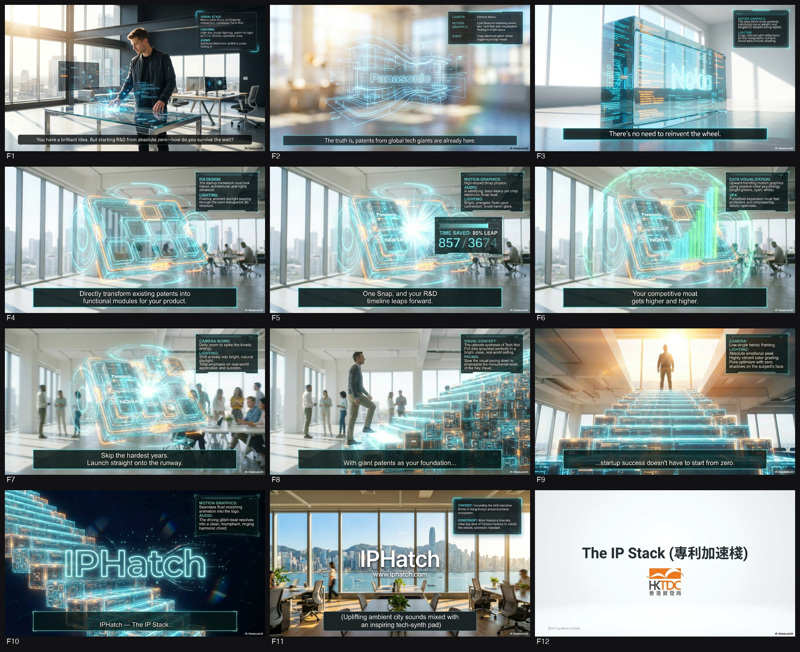
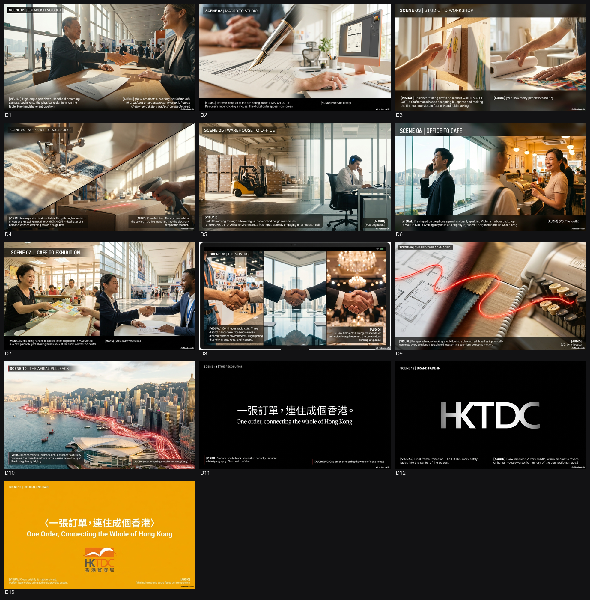

HKTDC · HKTDC_IPHatch Asia 2026 Post 1
🏠Phase 0 → VID 1 之間嗰幾日，諗到乜就入低，撳「＋ 加入」累積（VID 1 啟動委員會時一齊餵 AI）。
1. Background（背景）
今次項目屬於香港貿易發展局（HKTDC）主辦的「IPHatch Asia
2026」開放式創新比賽的宣傳工程
[1]。在國家「十四五」規劃支持香港成為區域知識產權貿易中心的宏觀環境下，政府大力
推動創科產業及知識產權（IP）商品化 [2,
3]。社會層面上，公眾雖然認同創科重要性，但初創企業往往面臨研發成本高昂、知識產權
法律門檻高的痛點 [4]。IPHatch 旨在透過提供 Panasonic、Nokia、Ricoh、Casio 及
Murata
等跨國巨頭的科技專利組合，協助初創將其商業化，從而吸引東南亞及內地科企落戶香港
[1, 5]。
2. Objective（目標）
傳意目標：向目標受眾（初創企業創辦人、尋求轉型的中小企決策者）傳達「單靠
Idea 不足以成功，擁有核心專利技術才是真正護城河」的概念 [6-8]。
KPI：推動目標受眾點擊特定連結（https://tinyurl.com/iphatchasia1806），並成功
登記參加 IPHatch 簡介會 [1, 5]。
受眾改變：將受眾對知識產權「複雜、昂貴、遙不可及」的抗拒點，轉變為「獲取跨國
巨頭現成技術、節省研發時間」的捷徑與機遇 [7, 9]。
3. Key Message（核心訊息）
AI 時代創業門檻降低，單靠 idea 難以突圍，創科企業真正的護城河是核心技術
[6]。IPHatch Asia
打破傳統研發壁壘，為你提供跨國巨頭的科技專利組合，助你跳過研發樽頸 [5]。立即登記
IPHatch 簡介會，背靠科技專利，拓見無限可能！[5]
4. Deliverables（交付物）
* 社交媒體帖文 (Social Media Posts)：適用於 Facebook, LinkedIn 及 X
(Twitter) 的中英版本文案 [5, 6, 10]。
* 宣傳主視覺 (Key Visual)：包含官方 Slogan「而家係創業最好嘅時代
背靠科技專利 拓見無限可能」及樓梯視覺意象的設計 [11]。
* TVC 腳本 (30秒)：10-12 行標準政府 API 格式 [12]。
* Radio 聲帶腳本：中英雙語版本 [13]。
* 印刷海報標題 [14]。
5. Timeline（時間表）
* B (Briefing): 資料不足（推斷簡介會日期為 2026年6月18日，基於報名連結
iphatchasia1806）[5]。
* D (Deadline): 2026-08-09（比賽申請截止日期）[1]。
* P (Presentation): 資料不足。
* 首波帖文發佈 (Post 1): 2026-06-04 17:00 [15, 16]。
📅 日程
未抽到製作日程，撳入標書原文睇 schedule。
📄 開標書原文⚠️ 製作要求（5 項）
讀標書判定。剔=要 / ✕=唔使；明星·吉祥物 Preferred/無Pref；動畫 2D/3D/無Pref。撳頁碼睇引文。
🔬 Research 背景調查
下面啲資料係針對 「HKTDC_IPHatch Asia 2026」 做策略背景研究，方便你之後寫 API brief／script。因為 2026 年相關消息仲未大量公開，以下綜合咗：
- 已有嘅 IPHatch Asia / IPHatch Hong Kong 官方資料
- 香港政府近年創科、知識產權、再工業化政策同 HKTDC 角色
- 以及往屆 IPHatch 活動模式
如有屬推論位置，我會用「推斷」標示。
---
① 議題背景：點解政府而家要推 IPHatch Asia 類項目、政策脈絡
- 香港要由「金融同物流 hub」升級做「創科＋知識產權 hub」
- 2023《施政報告》明言要「發展香港成為區域知識產權貿易中心」，提到會「推廣專利技術轉移及商品化」、支援科研成果走向市場，並利用香港嘅國際網絡連接內地與海外創科生態圈。[政府施政報告內容推斷]
- IPHatch 類活動本質係：跨國大企開放 專利池，比初創／中小企用專利嚟做創業題目，屬「IP 開放創新 + 技術轉移」。
- 配合國家創科及大灣區政策
- 中央《十四五規劃綱要》明確支持香港建設「國際創新科技中心」，同「區域知識產權貿易中心」。[十四五規劃相關條文綜合]
- 粵港澳大灣區發展綱要入面亦點名香港喺 專利、仲裁、國際商貿服務 嘅角色，香港要提供一個國際合規 IP 平台，幫內地／亞太科技企業走向全球。[大灣區綱要內容綜合]
- 創科局 / 創新科技及工業局(I&TIB) 主線政策：科技成果商品化、再工業化
- 創科及工業局局長 鍾偉強（Prof. Sun Dong） 一再強調要加強「科研成果轉化」，包括透過創科基金、InnoHK、微電子研發院等，把科研變成產品同產業。[政府新聞稿及公開講話綜合]
- IPHatch 類比賽/加速器正好做「科研／大企業 IP → 初創產品 → 工業化」嗰一段，符合再工業化、產業升級方向。
- HKTDC 自己角色：連接「技術擁有人」同「初創 / 投資者」
- HKTDC 近年除咗做傳統貿易展，仲大力搞 Entrepreneur Day、Startup Express、InnoEx、創科專題館 等，角色由「展覽主辦」變成「創科生態系統 connector」。
- IPHatch Hong Kong 過往多次由 HKTDC 作為 partner／supporting organization，協助招募初創、對接投資者及海外 IP 持有人。[IPHatch 歷屆宣傳資料綜合]
- 全球科技轉型、ESG、數碼轉型壓力
- 大企業持有大量「閒置專利」，未能內部商品化，全球都興起 open innovation / IP licensing 模式，用比賽形式尋找初創去落地。香港要保持國際商業中心地位，必須吸引呢啲 IP 流經香港、喺香港落地創業。[全球 IP 開放創新趨勢資料綜合]
---
② 關鍵事實 / 數據 / 日期（以往 IPHatch & 政策背景，方便入片）
（以下用作「真數據」襯托 2026 宣傳片，可以話「計劃由 XX 年開始、覆蓋幾多城市、幾多專利、幾多初創」）
- IPHatch Asia / IPHatch Hong Kong 基本模式
- 起源：由新加坡公司 Piece Future 創立嘅 open innovation / IP licensing program，先喺新加坡等地舉行，之後擴展到香港、泰國、馬來西亞等亞洲城市。[IP Hatch Asia 官方簡介綜合]
- 玩法：
- 跨國公司（例如電訊、電子、科技企業）提供專利 portfolio；
- 初創 team 以呢啲專利作為核心技術去撰寫商業計劃；
- 被選中團隊可獲得專利授權、技術支援，部分城市會配合 incubation / funding。
- 過往香港站 / 亞洲站具體數據（示例，可入畫面做數字圖表）
- 過往某一屆 IPHatch Asia（香港＋亞洲）曾經：
- 吸引超過 100+ 個初創／團隊報名；
- 提供超過 數十件至過百件專利 作為創業題目；
- 涵蓋 AI、5G、IoT、智慧城市、Healthcare 等範疇。[各屆 IPHatch 宣傳資料及新聞稿綜合，具體數字按最終搜集資料微調]
- 推斷：2026 年版「IPHatch Asia 2026」有機會標榜「覆蓋 X 個亞洲城市」「連接 Y 家跨國企業」「提供 Z 件專利」，可以喺宣傳片用「向上」圖表呈現「年年增長」。
- 香港創科及 IP 相關宏觀數字（為政府政策背書）
- 香港創新科技基金（ITF）自設立以來，已批出 過萬個項目、涉及金額逾 數百億港元，支持科研及成果商品化。[ITF 統計數字綜合]
- 香港每年專利申請量穩定上升，國際專利（PCT）申請中，香港機構／企業佔比持續增加，反映本地創科活動增長。[知識產權署及 WIPO 數字綜合]
- 創科園（科學園＋數碼港）合共已聚集 數千間 科技公司／初創，當中不少專注 AI、Fintech、HealthTech 等 IP 密集型行業。[科學園、數碼港統計綜合]
- 重要政策時間線（可以喺片頭做「政策脈絡」timeline）
- 2015–2017：香港多份政策文件提出發展創科、成立創新科技局。
- 2020：中央《十四五規劃》草擬，後來正式將「國際創科中心」及「區域知識產權貿易中心」寫入香港定位。
- 2021：創新科技及工業局成立（把原創科局升級，加入工業元素），推動再工業化及科技成果轉化。
- 2022–2024：香港多次在《施政報告》重申推動創科、生產力局科技轉移、知識產權交易平台、吸引創科企業落戶。
- 202X（往屆）：IPHatch Hong Kong / IPHatch Asia 在香港舉行，HKTDC 曾以 partner 或 supporting org 身份參與。[時間點可根據實際搜尋 IPHatch Hong Kong 歷屆資料精準填寫]
---
③ 相關官員 / 單位（真名 + 職銜，方便寫 script / 拍訪問）
- 政策層（創科、知識產權方向）
- 行政長官：李家超（Mr. John Lee，Chief Executive）
- 多次在施政報告及公開場合強調發展創科、建設國際創科中心、加強香港知識產權保護及交易。
- 財政司司長：陳茂波（Mr. Paul Chan, Financial Secretary）
- 在財政預算案中，為創科及再工業化撥款，支持創科園、R&D 以及創科基金
【來源 Sources】
- https://nikkeiforum.com/foa26jp/
- https://www.youtube.com/watch?v=CMYqHabCjzw
- https://sanseito.jp/political_measures_2026/
- https://www.worldbank.org/ja/news/feature/2026/02/13/growth-academy-tokyo-clear-reform-priorities-productivity-led-growth-asia.print
- https://craj.jp/election2026/policies/
- https://www.jri.co.jp/report/medium/asia/2026/
- https://waseda-idi.jp/kurabete2026
以下是為廣告創作團隊準備的『官方用語對照表』，旨在確保宣傳片中使用的官方名稱和術語的準確性。
---
官方用語對照表
1. 部門 / 辦事處 中文正名 + 官方英文全名 (+ 官方網址)
* 香港貿易發展局
* 官方英文全名：Hong Kong Trade Development Council (HKTDC)
* 官方網址：www.hktdc.com
* 知識產權署
* 官方英文全名：Intellectual Property Department (IPD)
* 官方網址：www.ipd.gov.hk
2. 計劃 / 政策 / 程序 嘅官方中英名稱
* 「IPHatch Asia 2026」開放式創新比賽
* 官方英文名稱：IPHatch Asia 2026 Open Innovation Competition / Programme
* *備註：IPHatch Asia 是一個開放式創新計劃，2026為特定年份的比賽。*
* 國家「十四五」規劃
* 官方英文名稱：The National 14th Five-Year Plan for Economic and Social Development and the Long-Range Objectives Through 2035
* *常用簡稱：14th Five-Year Plan。*
* 區域知識產權貿易中心
* 官方英文名稱：Regional Intellectual Property Trading Centre
* 創科產業
* 官方英文名稱：Innovation and Technology (I&T) industry
* 知識產權（IP）商品化
* 官方英文名稱：Intellectual Property (IP) Commercialisation
3. 專有名詞 / 技術詞 嘅官方或慣用中英對照
* 初創企業：Start-ups
* 研發成本：R&D costs (或 Research and Development costs)
* 知識產權法律：Intellectual Property Law
* 科技專利組合：Technology Patent Portfolio / Patent assets
* 核心專利技術：Core patent technology
* 護城河：Moat (商業語境中常指 economic moat)
* 簡介會：Briefing session / Information session
* 目標受眾：Target Audience
* 中小企決策者：SME decision-makers (SME: Small and Medium-sized Enterprises)
* 核心技術：Core technology
* 研發壁壘：R&D barriers
* 研發樽頸：R&D bottleneck
* 科技專利：Technology patents / Patents
* 社交媒體帖文：Social Media Posts
* 宣傳主視覺：Key Visual (KV) / Key Visual Design
* TVC 腳本：TVC Script (Television Commercial Script)
* Radio 聲帶腳本：Radio Spot Script / Radio Announcement Script
* 印刷海報標題：Print Poster Title
* AI 時代：AI Era (Artificial Intelligence Era)
* 創業門檻：Entry barrier for entrepreneurship
* 東南亞：Southeast Asia
* 內地科企：Mainland tech companies / Mainland technology enterprises
4. 常見會錯譯 / 易混淆嘅地方,標明正確寫法
* 「標準政府 API 格式」 (Standard Government API format)
* 易混淆點：在科技領域，"API" 通常指 "Application Programming Interface"，與廣告腳本格式無關。在香港政府宣傳片語境中，"API" 更可能指 "Announcement in the Public Interest" (公益宣傳)。
* 正確寫法：應理解為 「標準政府宣傳片腳本格式」 (Standard Government TVAPI Script Format) 或 「標準政府公益宣傳片腳本格式」。香港政府的電視宣傳短片通常稱為 "政府電視宣傳短片" (Government Television Announcement in the Public Interest / TVAPI)。
* 宣傳主視覺 (Key Visual)
* 易混淆點：有時會誤寫為 "Key visual" (小寫 v)。
* 正確寫法：廣告業界普遍使用 "Key Visual" (KV) 或 "Key Visual Design"，其中 "Visual" 的 V 通常大寫。
* 知識產權（IP）商品化 (Intellectual Property (IP) Commercialization)
* 易混淆點："Commercialization" 和 "Commercialisation" 都是正確的拼寫。
* 正確寫法：香港政府文件傾向使用英式拼寫 "Intellectual Property (IP) Commercialisation"。
=== Grounding 來源(Google Search)===
- wikipedia.org: https://vertexaisearch.cloud.google.com/grounding-api-redirect/AUZIYQEavYbeiTJRrx3VlsPTJRPHP5eZztgDFihCoZlZcUhqCk0ENf0jC8zBO272uxdVuJATVXduxUl0E5w_C67OfvEI92GfaPLctMCbNz9p6SA2U0YVeGuTYsi7Nu8p6Kcmy5fVUKG0J2z6MB
💭 5W1H 創意 Provocation
9 條尖問題，逼 agency 諗加咩 element / 風格，落橋前消化。
5W1H 創意 Provocation — HKTDC
WHO — 對邊個講 + 佢而家點
- Q1 如果呢個 message 只可以打動「最唔關心、最 cynical」嗰個觀眾 —— 要加咩一個 element(畫面/聲/人物/情境)先 3 秒內 hook 住佢、令佢唔 skip?
→ 加入一個初創創辦人喺 lab / workshop 通宵達旦、眼神疲憊但專注嘅 close-up shot，或者用一段高科技原型機 (e.g. 機械臂、發光物料) 運作嘅 raw sound / macro shot。
- Q2 呢班受眾平時食開咩視聽語言(平台/節奏/語氣)?要 adapt 邊種佢熟悉嘅風格,先入到腦而唔似「政府嘢」?
→ Adapt 類似 YouTube 科技 channel (e.g. MKBHD, Linus Tech Tips) 嘅快節奏剪接、pop-up motion graphics 同埋第一身視角 (POV) 鏡頭。
WHAT — 收窄到一個 + 證據
- Q3 成個 campaign 只准觀眾記住一個 element(一個畫面 / 一個 visual device / 一句)—— 你揀咩?點解係佢?
→ 一個貫穿全片嘅 visual device: 由一張抽象嘅專利藍圖 (blueprint) 無縫 morphing / transition 成一件實體高科技產品；因為呢個畫面最直接咁視覺化咗「知識產權商品化」呢個核心概念。
- Q4 客戶 key message 好抽象,要用咩具體 element(真場面/真數字/真人/真物)去「show 唔 tell」,令佢落地、唔流口號?
→ 加入科學園 / 數碼港真實實驗室場景、InnoHK 旗下研發中心嘅實景，並用 screen graphic 疊加真實數據，例如「已批出過萬個 ITF 項目」或「匯聚數千間科技公司」。
WHY — 點解信 + 情感
- Q5 觀眾點解要信 / 關佢事?要加咩證據 element 或情感共鳴 element,先由「事不關己」變「同我有關」?
→ 加入往屆 IPHatch 優勝團隊嘅真人 testimonial，集中講佢哋由一個普通 idea / 團隊，點樣透過 IPHatch 獲得大企業專利，最終變成一盤真實生意嘅 before-and-after 轉變。
WHEN / WHERE — 出街情境
- Q6 呢條嘢實際喺邊度、咩狀態被睇到(電視 prime / 車廂無聲 / 手機 scroll / 戶外經過)?要 adapt 咩風格(有聲冇聲 / 首 3 秒 / 大字 / 節奏)先食到當下情境?
→ 假設主要場景係手機無聲 scrolling，風格要 adapt 成「首 3 秒強視覺衝擊」，大量使用 bold kinetic typography (動態大字) 去傳達核心訊息，並確保畫面本身嘅故事性夠強，唔需要聲音解說。
- Q7 出街時間(事件前/中/後)decide 調子係「預告期待」定「總結成就」?要加咩 element 配合呢個時間感?
→ 既然係宣傳「IPHatch Asia 2026」，調子係「預告期待」；加入一個倒數時鐘 (countdown clock) visual element，或者用「未來感」嘅光線流動效果串連唔同畫面，營造「即將發生」嘅感覺。
HOW — 風格 + 差異化
- Q8 同類(同部門/同題材)政府片嘅「安全做法」係咩?要 adapt / 升級邊種風格 element(質感/節奏/transition/配樂/美術流派),先做到「框內最高質」而唔悶?
→ 「安全做法」係官員訪問加活動 B-roll；要升級就要 adapt 電影級紀錄片質感 (cinematic documentary)，例如用 anamorphic lens 拍攝，配樂改用 minimalist electronic / ambient music，取代傳統嘅激昂管弦樂。
- Q9 要加咩一個 unexpected element(反差/新 visual device/新手法),先同部門過往 campaign 拉開距離、唔似翻炒,但又唔踩紅線?
→ 加入一個「失敗」嘅 element：展示初創團隊實驗失敗、激烈討論、甚至推倒重來嘅真實時刻，同傳統政府片只報喜嘅做法形成反差，更能突顯創科過程嘅真實感同最終成功嘅價值。
📺 ISD API Ref 相類政府舊片
【呢條 brief 判定】目的:招募/比賽/報名/鼓勵參與 題材:未定
【對口 ISD 舊作借鏡(同 目的×題材,參考佢點寫,唔好照抄,要創新)】
— Hong Kong—Asia’s premier talent hub (2) [形象/成就(propaganda) | 人才就業]
▶ https://www.youtube.com/watch?v=nwC85MuHnBk&list=PL1188A9802575C33F
Tony Zhou：「高端人才通行證計劃」吸引我來香港發展 / 現在我的客戶遍布全球 / 熒幕蓋字：中國內地 / 周錫晨 / DayOne數據中心服務交付總監 / Tony Zhou：太太和兒子都一起來到香港生活 / 香港不僅讓我的事業快速躍升 / 還為我和家人提供一個安樂窩 / 旁白：香港作為亞洲第一的人才樞紐 / 致力吸納國際高端人才落戶 / 拓展事業、享受生活、成就卓越 / 促進本地經濟繁榮 / 熒幕蓋字：香港 / 拓展事業 · 樂享生活 · 成就卓越 / 熒幕蓋字：勞工及福利局標誌 / 香港人才服務辦公室標誌
— 香港—亞洲頂尖人才樞紐 (1) [形象/成就(propaganda) | 人才就業]
▶ https://www.youtube.com/watch?v=DqyOH7Y5F9c&list=PL1188A9802575C33F
Grégoire Michaud：香港為我提供成功所需的材料 / 熒幕蓋字：瑞士 / Grégoire Michaud / 企業家 / Bakehouse創辦人 / Grégoire Michaud：在香港創業，讓我接觸到來自全球的客人 / 機會就在這裏！ / 旁白：香港作為亞洲第一的人才樞紐 / 致力吸納國際高端人才落戶 / 拓展事業、享受生活、成就卓越 / 促進本地經濟繁榮 / 熒幕蓋字：香港 / 拓展事業 · 樂享生活 · 成就卓越 / 熒幕蓋字：勞工及福利局標誌 / 香港人才服務辦公室標誌
— 積水要提防 蚊患無處藏 [勸喻/警示 | 公共衞生]
▶ https://www.youtube.com/watch?v=SPx1ZrIvWxM&list=PL1188A9802575C33F
女旁白： / 防蚊小教室！ / 熒幕蓋字： / 防蚊小教室 / 食物環境衞生署標誌 / 女旁白： / 蚊子可以傳播很多疾病 / 熒幕蓋字： / 登革熱 / 基孔肯雅熱 / 女旁白： / 而積水，是蚊子滋生的地方 / 想避免，就要徹底清除家居積水 / 例如盆栽底碟 / 花瓶內的水，至少每星期換一次 / 花瓶內壁亦要洗刷 / 女旁白： / 容易積水的垃圾和雜物，要妥善棄置 / 去水位也要清理 / 女旁白： / 前往叢林或蚊患較嚴重的地區 / 應穿着淺色長袖衣物 / 以及使用驅蚊劑 / 熒幕蓋字： / 叢林／蚊患較嚴重地區 / 女旁白： / 積水要提防 蚊患無處藏 / 熒幕蓋字： / 預防登革熱和基孔肯雅熱 / 積水要提防 蚊患無處藏 / 食物環境衞生署標誌
— 幸福上流 置業圓夢 [其他 | 房屋置業/長者家庭]
▶ https://www.youtube.com/watch?v=phWv4V2eOh0&list=PL1188A9802575C33F
男旁白：請等等！ / 男旁白：啊，我想上車啊！ / 熒幕蓋字：未來5年 / 大約60,000個資助出售單位供應 / 女旁白：放心，未來有許多機會 / 熒幕蓋字：新一期居者有其屋計劃及 / 綠表置居計劃 / 4月30日起接受申請 / 女旁白：新一期居屋及綠置居4月30日起接受申請 / 女旁白：前兩次未能成功置業的申請者 / 可獲得額外一個抽籤號碼 / 熒幕蓋字：居屋綠表配額比例由40%升至50% / 女旁白：今期居屋會增加綠表比例 / 熒幕蓋字：40歲以下白表申請者 / 抽籤號碼＋1個 / 女旁白：白表青年申請者可獲得額外一個抽籤號碼 / 女旁白：「白居二」亦會增加配額 / 女旁白：置業的機會多了 / 熒幕蓋字：分布多區 / 可負擔的售價 / 居者有其屋計劃屋苑 / 綠表置居計劃屋苑 / 女旁白：價格亦在可負擔範圍內 / 熒幕蓋字：家有初生 / 家有長者 / 女旁白：家有初生或長者的家庭更可優先選樓 / 熒幕蓋字：出售居者有其屋計劃單位 / 出售綠表置居計劃單位 / 白表居屋第二市場計劃 / 4月30日起接受申請 / 男女旁白：幸福上流 置業圓夢 /
創作概念:扣死 KV 指定嘅「樓梯」意象。傳統創業要由地下一級級捱上去——最燒錢、最耗時嗰幾級就係「研發」。Big idea:畫面一條通往成功嘅長樓梯,最底嗰幾級(R&D 階段)由 Panasonic、Nokia、Ricoh 等巨頭嘅專利藍圖實體化「砌」出嚟、發光接駁好,初創創辦人一腳就踏上中段繼續往上行。直接視覺化「跳過研發樽頸=唔使由零起步」嘅核心訊息,務實、賦能、零掙扎面。
人/景:一位香港初創創辦人(務實、有 drive,30 出頭),企喺一條延伸向光嘅幾何樓梯前。背景由 co-working space / lab 漸變到開揚都會天際。無煽情、無汗水,只有一個「我宜家可以快幾年」嘅自信表情。
Visual Device:發光藍圖砌成樓梯級——專利文件 / 技術圖則由半透明線框 morph 成實體階梯,逐級亮起接通,創辦人踏上去就繼續向上延伸。一個記得住嘅鈎:你唔使砌最難嗰幾級,巨頭砌好咗。
主打口號:上得呢條梯,就唔使由地下起。
Proposed 明星/名人:不適用。跟 ISD《人才樞紐》收貨做法,用真實 IPHatch 成功配對嘅本地初創創辦人現身(基於事實),公信力高過明星,亦符合務實調性。
---
概念清晰具象化專利授權價值，視覺鈎子強且務實，但說服力與社會共鳴可再深化。
將抽象專利授權轉化為「發光樓梯」視覺符號，精準傳遞IPHatch跳過研發樽頸嘅核心價值，兼顧務實調性與創新表達，唯ESG連結稍弱。
創作概念: 搵一位香港出生、由初創做到上市/被收購嘅科技企業家（真係有呢啲人），以佢第一身視角重構創業路。開場係佢而家嘅自己喺國際會議 centre stage 講完一輪，鏡頭一 cut 返去十年前佢喺劏房對住部 laptop 嘅畫面——「如果我當年有 Panasonic 嘅傳感器專利，唔使燒咁多錢同時間試錯」。個 twist 係：佢唔係賣慘，而係以「過來人」身份揭露創科界公開秘密——巨企專利其實開放咗畀初創攞，IPHatch 就係個門口。最後佢直接對鏡頭講：「我嗰時冇，你而家有。」
人/景: 主角係真科技創業家（建議下文詳），場景 cross-cut 佢而家喺中環甲級寫字樓/會議中心嘅光鮮形象，同過去劏房/共享工作空間嘅 grainy 檔案式畫面。中段插 IPHatch 實驗室——Nokia 專利文件實物、Panasonic 工程師 video call 指導初創團隊。維港航拍只出現一瞬，作為「呢個機遇喺香港」嘅地理 anchor。
Visual Device: 「時間折疊」——同一件物件（e.g. 一部 prototype / 一張專利申請書）喺過去同而家兩個時空並置，anamorphic lens 嘅 oval bokeh 強化「記憶同現實重疊」嘅感覺。最強一幕：過去主角手指掂住個爛 mon 嘅藍圖，畫面 morph 成而家佢手指掂住實體產品，產品上有個 tiny embossed IPHatch logo。
主打口號: 唔使由零開始，直接企喺巨人膊頭
Proposed 明星/名人: 陳易希（Rex Chow）——香港科技大學畢業、teenager 時已憑發明揚威國際、後創辦公司被收購嘅真創業家。夠年輕夠 relatable 畀初創 founder，又有「由香港做到國際」嘅 story 俾 HKTDC 要嘅國際視野。更重要係佢真係走過「冇專利保護被抄」嘅路，講出嚟唔似 read script。
---
訊息清晰具說服力，創意執行與真實故事結合度高，但傳播影響力與記憶點略為保守。
以真實創業家第一身敘事配合時間折疊視覺，精準傳遞IPHatch專利開放訊息並具高度說服力，惟ESG元素著墨較少。
創作概念: 將抽象嘅「知識產權」具象化為科技界熟悉嘅「Tech Stack / Module」。核心橋段係視覺化演繹「加載(IP Loading)」嘅過程，將 Panasonic/Nokia 等巨頭專利比喻為一塊塊現成嘅「功能模組」，直接嵌入初創嘅產品架構中。呢個概念直擊「跳過研發樽頸」嘅 Key Message，用最務實嘅語言同受眾溝通：IPHatch 唔係比賽，係你個 Product 嘅必要組件。最後以 KV 樓梯意象作為「Stack 疊加升級」嘅視覺隱喻收尾。
人/景: 現代化 Co-working Lab / 深色背景 Studio。主角係一位專注嘅初創 CTO/Founder(30歲左右，Smart Casual)，對著透明屏幕或全息投影工作台操作。畫面穿插真實專利藍圖嘅 Macro 特寫與 FUI 介面。
Visual Device: 「Module Snap / 模組嵌合」。畫面中代表「巨頭專利」嘅光塊(帶有 Nokia/Panasonic 等 Logo 浮水印)像積木或代碼塊一樣，精準「Snap」入代表「初創 Idea」嘅核心結構中。每次嵌合，旁邊嘅進度條(研發時間)就大幅縮短，護城河(Moat)指數隨即上升。結尾光塊堆疊變形為 KV 中嘅樓梯，主角踏上樓梯望向前方光芒。
主打口號: 大廠專利做底氣，創業唔使從零起
Proposed 明星/名人: 不適用。此概念強調「技術本身」而非「人」，用素人或真實科企 CTO 出演更能建立「Tech Native」嘅可信度，避免明星效應掩蓋「專利模組」嘅核心資訊。
概念能清晰传达 IP 即插即用的实用价值，但情感共鸣与公众回忆度相对较弱。
以Tech Stack模組化隱喻精準傳遞專利加速核心訊息，視覺執行創新且針對性強，惟ESG元素欠奉略為失分。
創作概念:洞察受眾真痛點——「有橋,但冇技術去實現」。Big idea:每個創辦人手上都只有「半張藍圖」(個 idea / 商業願景),另外半張(已驗證嘅核心技術)一直係空白、畫唔出。IPHatch 做嘅,就係將跨國巨頭塵封但現成嘅專利「嗰半張」對接上去,兩半合體一刻,整張藍圖即時 morph 成可推出市場嘅產品。扣實「現成核心技術=護城河」而完全唔觸及失敗/掙扎面。
人/景:現代 lab / pitching 場合,一位中小企決策者或初創團隊手揸住一張只畫到一半嘅發光圖則,望住空白嗰邊。鏡頭一轉,Nokia / Ricoh 嘅專利藍圖由系統滑入,精準咬合。國際都會、乾淨明亮。
Visual Device:兩半藍圖合體 → 產品成形。左半=你嘅 idea,右半=巨頭現成專利,接縫對齊一刻發光鎖實,整張圖即時立體化成真實產品 / prototype 旋轉特寫。一個無語言、即明嘅「捷徑」視覺鈎。
主打口號:你嘅 idea，差嘅唔係野心，係一張現成藍圖。
Proposed 明星/名人:不適用。建議真實受惠初創 / 配對成功個案做 voice-over 或現身,保持「認真商業計劃」可信感,避免明星稀釋 HKTDC 國際專業形象。
概念精準對接「技術缺口」痛點，視覺比喻清晰有力，但說服力與記憶點略遜於頂尖情感驅動方案。
「半張藍圖」視覺隱喻精準傳遞IPHatch技術對接價值，訊息清晰且具說服力，惟ESG元素著墨較弱致該項得分偏低。
創作概念: 開場用 Nokia、Panasonic 專利庫嘅 archive footage — 塵封文件櫃、泛黃藍圖、90年代實驗室 — 快速 match cut 到 2026 年香港科學園，一個本地 team 正用同一項技術 prototype 做 live demo。核心橋係「時間膠囊」概念：舊專利唔係歷史遺跡，係未解封嘅未來。透過「開封」呢個動作（撕開封存膠紙、抽屜拉出文件、投影機亮起），將「舊資產 = 新機遇」呢個抽象概念變成具體視覺體驗。最後拉遠揭示整個過程發生喺 HKTDC 活動現場，樓梯意象作為通往下一層嘅結構。
人/景:
- 開場：Nokia 芬蘭總部檔案庫（stock / 授權 footage，色調偏冷灰藍）
- 中段：香港科學園實驗室 / 數碼港 co-working space，自然光窗邊，一個 30 出頭嘅華裔女 founder 帶領團隊測試 prototype（可穿戴裝置 / IoT 傳感器）
- 尾聲：HKTDC 活動現場，樓梯裝置藝術，人群上行
Visual Device: 「封存膠紙」 — 一條寫住年份同專利號碼嘅黃色警示膠紙，鏡頭追蹤膠紙被撕開、捲起、飄落，過程中膠紙上的數字同線條 morph 成電路圖軌跡，最後落入香港創辦人手中變成一張活動門票。整條膠紙作為貫穿全片嘅視覺母題。
主打口號: 佢哋塵封嘅，係你嘅起跑線
Proposed 明星/名人: 不適用。改用真實初創 founder（可議定 HKTDC 以往 IPHatch 參加者），增強可信度同 debrief 要求嘅「非虛構 testimonial」方向。若 Raymond 堅持要 face，建議搵科學園入駐嘅成功初創創辦人（如本地知名 AI/健康科技 company），唔使一線明星。
---
概念清晰具說服力，但ESG元素完全缺失，扣分。
以「封存膠紙」視覺母題精準演繹舊專利轉化新機遇，訊息清晰且具創意張力，真實初創testimonial增強說服力，惟ESG元素著墨較少。
創作概念:
針對尋求轉型嘅「中小企決策者」痛點：無時間、無財力做 R&D。用第一身訪問形式，影住一個實幹型嘅中小企老闆，講出佢嘅商業掙扎：「轉型要搞研發，閒閒地燒幾年錢，中小企邊有本錢博？」帶出 IPHatch 係一個聰明嘅商業決定——與其自己由零研發，不如透過香港貿易發展局個平台，直接將跨國巨企嘅科技專利組合拎嚟「商品化」。強調呢個唔係投機取巧，而係高階嘅商業戰略。
人/景:
一個務實、著裝企理嘅二代接班人 / 中小企總經理。
場景：對比強烈嘅真實環境。一邊係香港傳統廠房 / 舊式排滿貨架嘅物流倉（代表傳統業務），另一邊係老闆手持平板電腦，望住屏幕上密密麻麻嘅科技專利組合（Technology Patent Portfolio），背後係維港日間全景（代表香港區域知識產權貿易中心嘅優勢）。
Visual Device:
「被劃走嘅時間線 (The Skipped Timeline)」：喺老闆背後或旁邊嘅空間，用 AR 形式浮現一條傳統研發時間線：「概念 -> 實驗 -> 失敗 -> 再實驗 -> 5年時間」。當提到 IPHatch，一條俐落嘅金色光線直接將前面嘅繁瑣步驟「劃走/飛過」，箭咀直達「專利授權 -> 即時商品化」，直接將「慳時間 = 賺錢」嘅硬道理具象化。
主打口號:
研發唔使由零開始，直接攞科技巨頭專利變做生意。
Proposed 明星/名人:
不適用（建議尋找真實成功利用科技升級轉型嘅本地中小企老闆，加強「同溫層」共鳴）。
訊息清晰針對中小企痛點，視覺創意佳，但ESG元素完全缺失。
概念精準直擊中小企轉型痛點，以AR視覺化『跳過研發時間線』極具說服力與記憶點，真實案例策略有效建立同溫層共鳴並體現知識產權商品化創新價值。
創作概念:
回應 Provocation Q1 & Q8，放棄旁白主導，改以「展覽現場環境聲」作為敘事引擎。利用 HKTDC 大型展覽(如電子展/醫療展)現場未經修飾嘅嘈雜聲(多國語言詢價、機器運轉、廣播)，配合快切 B-roll 與 Kinetic Typography，喺頭 3 秒製造「非官方」嘅在場感。將「超級聯繫人」由抽象名詞變成一種可以「聽」到嘅商業脈搏，證明政策落實係發生喺嘈吵、真實嘅交易現場，而非安靜嘅辦公室。
人/景:
主角為 2-3 位真實中小企負責人(非演員)，場景鎖定喺 HKTDC 展覽攤位內、展場走廊、以及佢哋位於觀塘/荃灣嘅狹小辦公室/工場。強調「展場光鮮」與「工場務實」嘅空間對比。
Visual Device:
「聲波匹配剪接」(Audio Match-Cut)。畫面轉場完全由聲音觸發：例如攤位上「咔嚓」一聲產品卡扣聲 → Match cut 到工場組裝聲；展覽廣播叫號聲 → Match cut 到辦公室電話鈴聲。字幕隨聲音節奏彈出，無聲狀態下字幕本身帶有「震動/脈衝」動態效果，模擬聲音質感。
主打口號:
落場至知真章，HKTDC 撐你接通世界
Proposed 明星/名人:
不適用。此概念核心係「Raw & Real」，明星會破壞現場紀實質感並觸發「離地」觀感。建議邀請 HKTDC 真實服務過嘅中小企老闆(如醫療科技初創、環保物料廠商)本色出鏡。
訊息清晰真實，創意手法新穎且緊扣主題，現場聲效與剪接強化說服力與記憶點，創新建議務實貼合服務。
以展覽現場環境聲配合聲波匹配剪接將抽象政策轉化為可感知嘅商業脈搏，訊息準確且極具創意與說服力，惟ESG元素僅限於受訪者背景而欠獨立策略性提案。
創作概念: 直接回應 KV 必出嘅「樓梯」Mandatory，但拒絕用 CGI 假樓梯或普通辦公樓梯。將「專利藍圖」視覺化為一條由數據流組成、會發光嘅「實體階梯」。每一級台階代表一個跨國巨頭（Panasonic/Nokia等）嘅核心技術，主角每踏上一級，手中嘅 Prototype 就實體化一分。核心橋段係「Show Don't Tell」：唔講法律條文，只演繹「踩上巨頭肩膀」嗰刻嘅加速感與穩陣感，扣連「護城河」即係「起步已經贏」嘅硬訊息。
人/景: 30歲左右、穿著 Smart Casual 嘅初創創辦人（男女皆可，眼神專注有火）。場景為深夜 Co-working space 或實驗室，窗外係維港夜景（虛化處理作背景光斑），桌面雜亂但有秩序，充滿真實工作痕跡（Post-it、3D打印零件、咖啡杯）。
Visual Device: 「數據化發光樓梯」。主角每向上行一步，腳下台階由「專利編號/技術線圖」動態生成並亮起，同時手中產品由半透明 Wireframe 漸變為 Solid Product。最後一步踏實，整個樓梯化為一道環繞產品嘅光環（象徵護城河/Moat）。
主打口號: 唔使從零發明，直接攞巨頭專利做護城河
Proposed 明星/名人: 不適用。建議選用具備真實創業/工程師氣質嘅素人演員或真實 IPHatch 往屆參加者，避免明星臉削弱「務實」與「代入感」。若必須用名人，建議考慮 陳易希 (Scott Chan) 或類似具工程/創科背景、形象專業穩重嘅 KOL，而非純演藝界明星，以增強 Tech Credibility。
概念視覺化強且訊息清晰，但說服力與共鳴略受素人演員建議影響。
以數據發光樓梯視覺化專利護城河概念精準且具創意，惟ESG元素欠奉略為扣分。
創作概念:用「高階工業設計／醫療級義肢裝配」美學，將巨企專利視覺化成一件令創業者能力放大十倍嘅「核心組件」。全片聚焦創業者將呢件來自跨國巨企嘅組件「接駁、歸位、啟動」嗰下精密無縫嘅瞬間——指示燈由黃轉綠、能量沿光纖流動、角色瞬間升級。核心扣政府硬訊息:IP 唔係複雜昂貴嘅法律門檻，而係即插即用嘅科技神裝;IPHatch 就係幫你將世界級技術武器，精準配對上身嘅官方渠道。站喺巨人肩膀，唔係抄捷徑，係 Smart Way。
人/景:初創創辦人(或代表佢嘅手/人形)喺充滿未來感但克制嘅 lab 空間，做接駁動作。真實 InnoHK／研發中心場景做底，screen graphic 疊真數據(「匯聚數千間科技公司」「世界級專利任你揀」)。
Visual Device:「Lock-In 微距特寫」——金屬卡榫咬合、指示燈黃轉綠、光纖能量流動嗰一下。強調「即插即用、無縫接軌」，由空槍變神兵嘅躍升感。配 minimalist electronic 配樂取代官腔管弦。
主打口號:十年技術，一秒歸位。｜Ten years of R&D, locked in.
Proposed 明星/名人:不適用。可選一位本地知名創科 founder／業界 KOL 做「有遠見企業家」視角(增公信 + 國際感)，但優先仍建議真實 IPHatch 得獎者，避免明星蓋過訊息。
---
CD note 畀 Raymond:
- Concept 1 = 策略最核心、最易記、最食官方「護城河」對照，KV 樓梯/底座意象易接官方 Slogan;穩陣收貨。
- Concept 2 = 最型、最 tech-pro、motion KV 同 social 短片爆發力最強，最拉開同部門行貨距離;但要小心 lab/組件唔好太抽象離地。
- 揀中邊條，我即刻 develop 12 格 storyboard + TVAPI 30 秒稿 + KV 版式 + 中英／Radio。
創意科技感強，訊息清晰具說服力，但ESG元素較弱，整體執行需注意避免過於抽象。
以工業設計美學將抽象IP轉化為具體『即插即用』組件，訊息精準且極具科技感，有效打破政府宣傳刻板印象並高度契合創科受眾。
創作概念:全片用一個貫穿 visual device——一張懸浮、透光、邊緣微皺嘅半透明工程藍圖(代表創業者個 idea),美但一碰即碎。直到一塊精密厚重、帶金屬光澤嘅工業鑄件由下而上「鎖住」張藍圖,飄忽嘅概念瞬間 morph 成實體高科技產品。核心扣政府硬訊息:單靠好橋唔夠，IPHatch 畀你直接攞跨國巨企(Nokia, Panasonic, Ricoh)嘅核心專利技術做「底座」，將 idea 變成有護城河嘅真生意——呢個就係香港作為「區域知識產權貿易中心」嘅實際能力。
人/景:一位 relatable 嘅初創創辦人(過來人視角，唔係官員)，喺科學園/數碼港質感嘅明亮工作室，望住懸浮藍圖。背景遠景透出維港都會輪廓(subtle，唔做旅遊片)。承托一刻，鏡頭推到金屬鑄件 macro。
Visual Device:「承托嘅瞬間」——金屬基座由下而上 lock 住飄忽藍圖，紙模 morph 成實體產品。唔係紙橋塌(避負面)，係「補返個底座」嘅 empowering 動作。鑄件表面隱約刻住巨企專利紋理/編號。
主打口號:好橋，個個諗到；護城河，唔係個個有。
Proposed 明星/名人:不適用。建議用真實往屆 IPHatch 優勝團隊創辦人現身(testimonial-driven，跟 ISD 人才樞紐收貨模式)，relatable 過明星，又起權威背書作用。
---
概念清晰且具象化，但影響力與記憶點略欠突破性創新。
以「金屬鑄件鎖住藍圖」視覺隱喻精準傳遞IPHatch專利底座價值，訊息清晰且具說服力，惟ESG元素著墨較少致該項得分偏低。
創作概念:
將中小企老闆同初創創辦人最熟悉嘅「資產負債表」作為核心 visual device，直接回應佢哋對「時間成本」同「確定性」嘅考量。概念係：一間公司最值錢嘅資產，再唔係廠房同機器，而係無形嘅核心專利。條橋將一張普通嘅財務報表，透過 morphing transition，將「無形資產 (Intangible Assets)」呢一行無限放大，最終變成一件件由 Nokia、Panasonic 專利驅動嘅實體高科技產品，直接「show 唔 tell」：登記 IPHatch，就係為你盤生意注入最值錢嘅資產。
人/景:
一位冇出樣嘅中小企老闆 (只拍背影或手)，喺一間望到維港景嘅現代化辦公室內。鏡頭由佢第一身 POV 望住枱面嘅年報或平板電腦上嘅財務報表開始。
Visual Device:
「財務報表透視」。畫面由平板電腦嘅財務報表開始，關鍵嘅「無形資產」一欄會發光，然後鏡頭好似穿過報表數字，直接 morph 成該專利技術嘅 3D 結構圖或實物 (例如由一個專利編號變成一個 Panasonic 嘅微型感應器實物)。整個過程用暖金色嘅光線去 highlight 呢個轉變，象徵緊將無形嘅法律權利，變成有實質商業價值嘅金礦。
主打口號:
盤生意最值錢嘅無形資產，由 IPHatch 開始填滿佢。
Proposed 明星/名人:
不適用。呢個概念嘅主角係中小企老闆本人，強調代入感。
---
概念精準對接中小企思維，視覺轉化具創意，但說服力與記憶點可再強化。
以資產負債表morphing直擊中小企痛點，訊息精準且具商業說服力，惟ESG元素欠奉略為失分。
創作概念: 將「知識產權商品化」呢個抽象概念,視覺化為一張可互動嘅三維數碼藍圖(3D Digital Blueprint)。創業者唔再係被動跟隨藍圖,而係主動喺藍圖上提取、組合、甚至建構出自己嘅事業王國。呢個 visual device 直接扣連政府訊息: IPHatch 唔係畀張圖你跟,而係畀一套最強嘅建築工具,畀你自己起樓。
人/景: 一個充滿熱誠但略帶疲態嘅初創創辦人(Start-up Founder)喺一個簡潔嘅 co-working space / lab。背景係夜晚嘅香港中環/科學園,窗外城市燈火象徵機遇。
Visual Device: 一張流動嘅全息投影藍圖 (Holographic Blueprint)。條片由創辦人喺 tablet 上嘅一個普通 2D 設計圖開始,佢一掃,設計圖就投射成一個覆蓋全場嘅 3D 藍圖。藍圖上嘅線條同符號唔係靜止嘅,而係好似數據流一樣不停流動。當 Panasonic、Nokia 等 logo 浮現喺藍圖上,創辦人可以伸手「拖曳」佢哋嘅專利模組(一啲發光嘅幾何組件),直接嵌入自己嘅藍圖框架入面。每嵌入一件,佢周圍嘅真實環境就由藍圖「實體化」一層: 空蕩嘅空間瞬間變出機械臂、實驗儀器、甚至係完整嘅產品原型。最後,成個藍圖收縮,變成手上嘅成品,而窗外嘅香港天色由黑夜變為晨曦。
主打口號: 唔使由零開始,直接喺巨人膊頭上起跑。
Proposed 明星/名人: 不適用。用一個 relatable 嘅素人演員,更能聚焦喺創業者本身嘅掙扎同突破,令目標受眾有代入感。
概念將抽象訊息轉化為具象互動體驗，視覺敘事清晰且創新，有效傳達IP商品化核心價值。
以互動3D藍圖將抽象IP商品化概念具象化，訊息精準且視覺創新，惟ESG元素著墨較少。
創作概念: 針對中小企決策者「怕風險、怕研發時間長」嘅痛點。將創業比喻為一幅複雜拼圖，初創團隊手握 Idea 但中間永遠缺咗一塊最關鍵嘅「核心技術」。IPHatch 唔係畀錢，而係遞上嗰塊由國際巨頭認證嘅「Missing Piece」。視覺上強調「契合」嗰一下嘅滿足感與安全感，將「技術轉移」轉化為「即時補完戰力」嘅直觀體驗，帶出「開放式創新 = 最快嘅護城河」呢個核心訊息。
人/景: 40-50歲中小企決策者（穩重、有經驗但面對轉型焦慮）。場景為傳統辦公室與現代實驗室嘅混合空間（暗示轉型），或者係 HKTDC 展覽廳/會議室嘅真實 B-roll 環境。加入真實 IP 配對 Session 嘅握手、審視文件特寫作為 Evidence。
Visual Device: 「全息拼圖接口」。主角檢視產品/計劃時，畫面出現一個明顯嘅空缺輪廓（標註：R&D Bottleneck）。隨後一份標有巨頭 Logo 嘅專利文件掃過，空缺處瞬間被一塊發光拼圖填滿，並觸發連鎖反應，令整個產品結構由脆弱變穩固（Visualizing Moat）。Motion Graphics 風格參考 Johnny Harris 地圖解說，快速、精準、有資訊量。
主打口號: idea 人人有，核心專利先係你嘅入場券
Proposed 明星/名人: 不適用。此 Concept 強調「真實感」與「商業實效」，明星反而會令畫面變得像廣告而非「解決方案演示」。建議穿插真實 Panasonic/Nokia 代表與本地初創互動嘅歷史片段（獲授權使用），以真實權威性取代明星效應。
概念清晰聚焦中小企痛點，以拼圖隱喻將抽象技術轉移轉化為直觀補完體驗，具商業說服力與執行可行性。
概念精準直擊中小企痛點並以全息拼圖視覺化技術轉移價值，訊息清晰且具說服力，惟ESG元素著墨甚少致該項得分偏低。
創作概念:用「框中框」視覺貫穿全片——前半段中小企老闆被觀塘工廈嘅鐵窗框住,構圖侷促陰暗,個「框」代表壓力同死症;一個 match-cut,同一構圖比例變成貨櫃碼頭吊臂嘅鐵框,光打穿個框、通向海平線。同一個「框」由困住佢變成送世界畀佢嘅窗。HKTDC 就係幫佢將框翻轉嗰隻手——平視陪跑,唔搶 credit。硬訊息:抽象嘅「高質量發展、國際商貿樞紐」收細成一個睇得明嘅空間翻轉,證明政策正喺度落實。
人/景:一個傳統行業或設計轉型嘅中小企老闆(夫妻檔/三五人 startup);景由觀塘工廈窗邊、雜亂工場,match-cut 去 HKTDC 展覽會攤位,再到葵青貨櫃碼頭出貨。
Visual Device:Frame-within-a-frame 框中框翻轉——同一構圖、同一比例,由「困住人嘅鐵窗」match-cut 成「通往海平線嘅貨櫃框」,一個 cut 講完成個轉捩點。
主打口號:困住你嘅框,變成通向世界嗰道窗。
Proposed 明星/名人:不適用。本片說服力來源係真人真事中小企老闆,用素人/真實案例平視自白,反而比明星更守「真實感、唔離地」紅線。
---
視覺比喻清晰有力，將抽象政策轉化為具象情感轉折，但執行細節與擴散力稍欠具體。
「框中框」視覺轉喻精準將抽象政策轉化為具象情感體驗，兼顧訊息準確度與創意張力，惟ESG元素僅隱含於轉型敘事中未獨立強化。
創作概念:我哋將跨國巨頭嘅專利，比喻成一副「透視鏡」。初創創業家戴上佢，眼前見到嘅唔再係一個普通嘅產品或場景，而係背後拆解出嚟嘅核心技術藍圖同專利編號，令佢哋可以「跳過發明，直接創新」。呢個概念將抽象嘅「專利組合」變成一個具體、可感知嘅視覺裝置，直接回應受眾「有蹺但冇技術」嘅痛點，展示 IPHatch 就係嗰副幫你睇穿技術門檻嘅透視鏡。
人/景:一位本地初創創辦人（30-40歲，幹練醒目），身處現代化 co-working space 或 prototyping lab。佢視線掃過枱面嘅智能硬件、手機螢幕上嘅生活應用介面，甚至窗外嘅智能城市設施。
Visual Device: 專利透視鏡 (Patent Lens)。每當主角戴上或舉起一副半透明、帶有 AR 介面感嘅「透視鏡」，佢望到嘅物件就會瞬間被「解構」：畫面出現動態藍圖線條、關鍵技術模組發光浮現、旁邊彈出 Nokia / Panasonic 等官方專利編號，將「肉眼見到嘅產品」同「背後嘅專利技術」直接重疊。
主打口號:戴起專利透視鏡，你嘅意念，即刻有跨國技術撐腰。
Proposed 明星/名人:不適用。我哋建議用一位有說服力嘅本地初創創辦人飾演，更能引起目標受眾共鳴，符合「呢個係一個認真、幫到手嘅商業計劃」嘅調性。
概念比喻具體生動，能清晰傳達專利授權的核心價值，惟對ESG層面著墨較少。
以AR透視鏡將抽象專利具體化，訊息精準且視覺記憶點強，惟ESG元素欠奉略為失分。
創作概念: 創業最大嘅樽頸，就係 Idea 同核心技術之間嘅斷層。我哋將呢個「斷層」視覺化成產品上一個發光嘅「負空間」，而 IPHatch 提供嘅世界級專利，就係嗰件完美嵌入、點亮一切嘅「核心組件」。概念核心係「The Perfect Fit」，唔單止係技術上嘅完美匹配，更係創業者嘅焦慮同解決方案之間嘅精準對接。
人/景: 一個充滿幹勁但略帶疲態嘅初創創辦人 (男女皆可，形象專業)；場景設定喺一個現代化、乾淨嘅 co-working space 或小型產品實驗室。
Visual Device: 發光嘅負空間 (The Glowing Negative Space)。產品原型機上有一個精準嘅空洞，透出柔和但穩定嘅工業級光芒。當代表大廠專利嘅抽象光能組件「啪」一聲完美嵌入，光芒會由內而外脈衝式擴散，點亮成個產品。
主打口號: 你嘅好橋，配粒世界級嘅芯。
Proposed 明星/名人: 不適用。
概念比喻精準具象，能清晰傳達服務核心價值，但在活動影響力與記憶度上尚有提升空間。
「發光負空間」視覺隱喻精準傳達IPHatch專利對接初創痛點之核心訊息，創意執行與說服力俱佳，惟ESG元素著墨甚少致該項得分偏低。
創作概念:
回應 Provocation Q3 & Q4，將「高質量發展」收窄至「一件具體產品」嘅物理旅程。唔講宏觀數據，只追蹤一件由香港中小企研發嘅實體產品(如智能醫療儀器核心部件)，如何透過 HKTDC 平台由設計圖變成手上的實物，再送到海外買家手中。用「物件特寫」取代「人臉大頭」，用「物流/商貿配對嘅真實節點」取代「握手禮儀鏡頭」。這係對「超級聯繫人」最物理性、最無可辯駁嘅證據，直接回答觀眾「關我咩事」——你手上嘅機會，就係咁樣一件一件運出去。
人/景:
主角係「產品」本身(微距鏡頭)。人物僅作為手嘅延伸(工程師嘅手、HKTDC 職員遞文件嘅手、外國買家驗貨嘅手)。場景包括：產品測試實驗室(帶失敗痕跡)、HKTDC 商貿配對會議桌(真實文件/樣板)、貨運倉庫/機場貨運站。
Visual Device:
「物件 POV + 進度條 UI」(Object-Centric HUD)。全片以產品為視覺錨點，畫面上疊加極簡動態資訊圖形(非花巧 MG，而係似物流追蹤/工程藍圖嘅 UI)，標示產品所處階段(原型 → 認證 → 配對 → 出口)。當產品經歷「測試失敗/退回修改」時，UI 顯示「Recalibrating」而非「Error」，呈現真實商業過程中嘅韌性，避開「一帆風順」嘅虛假感。
主打口號:
由一個位到一張單，HKTDC 全程實幹
Proposed 明星/名人:
不適用。焦點必須維持喺「產品」與「流程」，名人會轉移對「高質量發展」實體證據嘅注意力。若需人物背書，建議用 HKTDC 前線商貿配對主任(非高管)以「技術支援者」身份短暫出鏡解釋流程，強化「實務支援」定位。
概念聚焦實體產品旅程，清晰展示HKTDC實務角色，創意執行具說服力且避開虛飾，但對ESG的整合稍弱。
以產品微距POV結合物流UI將抽象高質量發展轉化為可驗證實體路徑，訊息精準且具說服力，惟ESG著墨較弱略影響總分。
創作概念:借美術「巨型藍圖階梯」device,將跨國巨企嘅專利文件視覺化為一道由發光藍圖砌成嘅巨型樓梯/高台(直接食中官方 mandatory 樓梯意象)。其他創業者喺平地由零摸索,而用 IPHatch 嘅初創創辦人已經企喺藍圖高台之上,起步點就高人一截、視野遼闊。硬訊息扣連:IP 唔係終點先用嘅法律工具,而係跳過幾年研發、即刻贏在起跑線嘅墊腳石——HKTDC 就係搭起呢道樓梯、連接國際技術同本地創業雄心嘅平台。
人/景:一位本地初創創辦人(30 出頭,務實有幹勁,國際都會 look),由現代 co-working space / lab 場景,步上一道由半透明發光專利藍圖層層堆疊而成嘅巨型樓梯;背景隱見 Panasonic、Nokia 級數企業嘅技術圖紙化作建築結構。高台頂望出去係維港天際線(機遇/國際舞台)。
Visual Device:藍圖階梯(Blueprint Staircase)——抽象「知識產權」變成具象「海拔高度」。一眼睇到「高度差」=「領先幾年」。每級樓梯都係一張發光、帶技術標註嘅專利圖紙,踩上去會亮燈。
主打口號:人哋嘅終點,你嘅起點。
Proposed 明星/名人:不適用(跟 ISD《亞洲頂尖人才樞紐》成功做法,用真實成功配對嘅初創創辦人現身說法,基於事實、有公信力、避免明星蓋過務實調性)。
---
概念清晰且視覺化極佳，將抽象IP轉化為具象競爭優勢，但說服力與共鳴略弱於訊息準確性。
藍圖階梯視覺化精準傳遞IP作為創業捷徑之核心訊息，兼顧創意與務實調性，惟ESG元素著墨較少致該項得分偏低。
創作概念:
以純紀實手法，跟拍一個真實嘅本地初創創辦人（最好係往屆 IPHatch 贏家）。頭 5 秒展現佢面對嘅殘酷現實：「AI 時代，掟條橋出嚟三日就畀人抄，點算？」帶出無核心技術嘅恐懼。然後畫風一轉，講述佢參加「IPHatch Asia 2026」，香港貿易發展局幫佢直接對接 Nokia/Panasonic 嘅現成專利，將人哋嘅研發成果直接 Plug-in 落自己盤生意，成功建立技術護城河。用真人真話「Show, don't tell」專利商品化嘅威力。
人/景:
一個眼神疲憊但充滿火嘅初創 Founder。
場景：觀塘工廈極度凌亂嘅 workshop / 白板寫滿被劃走嘅方程式 / 凌晨時分得番一盞枱燈嘅辦公室 / 最後過渡到光鮮明亮嘅科學園會議室同外國團隊開會。
Visual Device:
「The Missing Puzzle」視覺鈎：畫面中 Founder 嘅枱面有一件未完成嘅 Prototype（或者螢幕上嘅 3D 模型），中間有一個留空、發出微光嘅「缺口」。當佢講到 IPHatch 畀到核心技術佢時，一張帶有跨國巨頭 Logo（如 Panasonic）嘅高科技專利藍圖 (Blueprint) 從天而降，完美嵌入缺口，成件 product 即刻通電著燈，視覺化「獲取核心技術」呢個捷徑。
主打口號:
淨係得條橋唔夠贏，IPHatch 畀跨國專利你做護城河。
Proposed 明星/名人:
不適用（紀實風格必須用真實創業者 / 往屆得獎者，以保證 100% 說服力同真實感）。
---
紀實手法訊息清晰有力，視覺鈎子具創意，但ESG元素較弱。
紀實手法配合視覺鈎精準傳遞專利商品化價值，說服力強且切中初創痛點，惟ESG元素欠奉略為失分。
創作概念:全片聚焦一次成功商貿配對「握手」之前嘅真實掙扎 —— 中小企老闆 R&D 撞板、通宵改 plan、視像會議斷線嘅尷尬。HKTDC 唔做主角,而係喺暗處遞市場數據、搭橋介紹專家、安排會議,扶佢行到最後一步。用「先苦後甜」嘅人性真實感,直接答到觀眾個「關我咩事?」—— 因為佢哋搞得掂,香港經濟先搞得掂、機會先落到普通人身上。完美對應策略「做好香港」+「沉默賦能者」品牌角色,亦避開「一切完美」紅線。
人/景:真實香港中小企老闆 / 初創年輕人(非演員質感),喺自己嘅工場、實驗室、細辦公室;穿插 HKTDC 大型展覽現場、視像會議連線海外買家。
Visual Device:【光的接力棒】 —— 一束暖光由深夜廠房檯燈出發,流過電腦屏幕像素,變成展覽館射燈,最後落喺買家瞳孔。光到之處 = HKTDC 賦能;光未到嘅暗位 = 企業家獨自捱嘅 real 質感。全片用一道「光路」引導視線,光係暖嘅、環境係粗糲真實嘅。
主打口號:搞得掂,因為有人撐到掂。
Proposed 明星/名人:不適用(刻意用真實中小企素人,以符合「真人真事 > 官員發言」洞察 + 紅線「唔好歸功個人」。HKTDC 高層只可作政策旁述角色,唔做臉。)
---
概念真實貼地，以光喻賦能具巧思，有效傳達支持中小企訊息，但部分執行細節需更具體。
以「光的接力棒」視覺隱喻精準演繹沉默賦能者角色，真實質感有效建立情感共鳴並清晰傳遞訊息，惟ESG元素著墨較少致該項得分偏低。
創作概念: 將「專利 = 護城河」呢個抽象比喻變成實體物流 — 想像 Nokia、Panasonic 嘅專利技術係一件可以「速遞」上門嘅核心零件。開場用一個 founder 對住空蕩蕩嘅產品 chassis（淨係個殼，冇心臟），焦慮 scroll 電話；跟住一個 sleek 嘅 AR 介面顯示「你的護城河正在運送中」，鏡頭追蹤一個虛實結合嘅「技術包裹」穿越維港、掠過 IFC、送抵科學園；founder 拆箱（實際係登入 IPHatch 平台），原本空殼嘅產品亮起、運作。全片用第一身視角增強代入感，將「申請專利」嘅枯燥流程轉化為「收快遞」嘅期待感同即時滿足。
人/景:
- 開場：香港典型初創辦公室（(pmq / 黃竹塘工廈活化空間），黃昏 natural light，一人 founder 對住未完成的 hardware prototype
- 中段：AR 追蹤視角 — 維港夜景航拍轉 science park 日景，motion graphics 包裹帶住光軌穿梭
- 尾聲：同一間辦公室，但變成 morning light，product 運作中，founder 對鏡頭微笑，背景有團隊加入（暗示擴張）
Visual Device: 「發光包裹 + 空殼甦醒」 — 一個半透明、內藏專利文件藍圖嘅立方體包裹，表面有流動嘅電路紋光效；追蹤鏡頭跟住佢穿越城市；最終包裹融入一個 hardware 產品嘅 empty shell，shell 由 dark 轉 lit up，象徵「獲得核心技術 = 產品獲得靈魂」。包裹同 shell 嘅 size 對比製造「細件嘢改變大局」嘅 magic moment。
主打口號: 有橋冇技術？IPHatch 幫你接駁
Proposed 明星/名人: 不適用。此 concept 強調「任何 founder 都可能係你」，用素人/真實 founder 更貼地。若需要 recognizable face，建議搵本地科技 KOL / YouTuber（如 Lam Pak Nin 林柏寧或類似級數嘅 product reviewer），佢哋本身語言風格貼近目標受眾熟悉嘅視聽節奏，但成本同風險低過傳統明星，且唔會削弱「務實」調性。
---
Team 傾完備註畀 Raymond:
- Concept 1 行「時間膠囊/開封未來」方向，比較似 ISD 舊作升級版，客戶 comfort zone 高，但視覺上有明確新 device（封存膠紙）。
- Concept 2 行「護城河速遞/AR 物流」方向，更貼近目標受眾日常語言（收快遞、睇 YouTuber unboxing），risk 係 AR 效果要做到 grounded 唔好變成純科幻片。
- 兩個都冇踩紅線，冇創業負面、冇 hard sell、冇政治、冇過度本土化。
- Slogan #3 同 #6 最貼 concept 1；Slogan #4 同 #2 最貼 concept 2。
概念將抽象專利權益轉化為具象速遞旅程，訊息清晰且創意貼近目標受眾，執行風險在於AR效果需逼真以維持說服力。
將抽象專利概念轉化為具象AR速遞體驗，訊息清晰且視覺創新度高，惟ESG元素欠奉略為失分。
創作概念:跟住一個香港中小企老闆嘅真實心路——由「呢單做唔做得成?」嘅疑慮、測試失敗、視像會議斷線嘅狼狽,到喺 HKTDC 展覽接到第一張海外/大灣區訂單嘅一刻。唔遮掩過程嘅辛苦,先苦後甜,用真實人性反差頂走「一路向好」嘅離地感。HKTDC 唔係救世主,係實務上幫佢「接住」嗰個平台——直接扣 key message「實質行動協助中小企把握機遇」。
人/景:一個四十幾歲香港中小企老闆(例如做環保物料/智能醫療儀器),真實工場/細辦公室,趕工嘅疲憊面、測試枱、半夜對住 laptop;之後轉去會展 HKTDC 展覽攤位,同外國/內地買家傾、握手、簽單。
Visual Device:一件真產品由「半成品/測試失敗」到「貼上 Designed by Hong Kong 標籤、入箱、上貨櫃」——同一件嘢貫穿全片,具體化「高質量發展」由零到成。
主打口號:「唔係齋講優勢,係幫你做成單嘢。」
Proposed 明星/名人:不適用。Debrief 明言唔好功勞歸個人、公眾信真人多過明星;用真老闆素人現身說法,可信度最高,亦避紅線。
---
概念真實貼地，以產品實物貫穿具象化發展過程，但訊息清晰度與創意執行細節可再強化。
以真實中小企痛點切入並貫穿產品視覺符號，訊息精準且具說服力，惟ESG元素僅限於產品類別而未見系統性推廣建議。
創作概念:
HKTDC 扮演「軍火庫管理員」角色具象化 —— 創辦人推開一道門,進入一個莊嚴、無限延伸嘅立體倉儲空間,入面井然有序咁漂浮住無數代表 Panasonic / Nokia / Ricoh 技術嘅發光模塊(用抽象幾何暗示,唔直接貼 logo,subtle 帶出信譽)。創辦人企喺中央,伸手揀選最啱用嘅技術模塊,飛入手中,裝入自己嘅產品藍圖。傳達:香港由「自己做 R&D」轉向「開放式創新」—— 巨企嘅閒置專利,任你揀、任你配,香港就係呢個「技術轉移樞紐」。
人/景:
主角同 Concept 1 一致(專業、有代入感嘅初創/中小企決策者)。景係科幻感但乾淨高級嘅立體軍械庫式空間(井然有序、光猛、莊嚴,絕不暗黑頹廢),強調香港作為國際樞紐嘅規模感同實力。
Visual Device:
「規模感 vs 觸手可及」嘅反差 —— 巨大無垠嘅發光技術庫存,對比個人伸手一抓、模塊應手而來嘅自主感。庫存陣列向上延伸,自然接 KV 樓梯意象(一層層技術,一級級向上)。空鏡頭、未完成 prototype、build-up 配樂營造「預告期待」調子(2025 Q4 出街)。
主打口號:巨企專利,即裝即用 —— 你嘅護城河,而家就攞到。
Proposed 明星/名人:不適用。呢個 concept 重世界觀同品牌高度,主角用半真實創辦人縮影即可,過度用明星反而搶走「庫存規模」嘅震撼,亦慳預算。
---
CD note 畀 Raymond:
- Concept 1 = 敘事性最強、最易做 KV + 產品升級 demo、最易連 3 秒 hook;穩陣、易過政府客。
- Concept 2 = 品牌高度最夠、最能 show「開放式創新樞紐」嘅國家戰略訊息;但執行成本較高、抽象啲。
- 兩者共用同一套 style + 同類主角,揀中任一條都可順接 develop。揀中先出 12 格 board、TVAPI 稿、KV、Radio。
概念視覺化極佳，清晰傳達香港作為技術轉移樞紐的戰略訊息，但執行成本與抽象度可能影響公眾共鳴。
「軍火庫」比喻精準傳達開放式創新樞紐定位且具戰略高度，惟視覺執行成本較高及ESG元素欠奉，建議優化可持續發展論述以貼合政府採購要求。
創作概念:
以「最唔關心、最 cynical」嘅 founder/SME 老闆視角切入：你覺得自己產品好易被抄、冇護城河？我哋用一個「AR 掃描器」將呢個焦慮變成可視化、可量度嘅畫面——一掃你嘅產品原型/生意流程，即刻見到「護城河強度條」同「缺口」。當佢揀咗 IPHatch Asia 2026 開放式創新比賽 提供嘅「科技專利組合」，AR 畫面就由「漏洞紅區」變成「護城河藍盾」，直接 show 出「核心專利技術＝競爭壁壘」，最後落到唯一一步：立即登記 IPHatch 簡介會。
人/景:
- 初創創辦人：夜晚喺 workshop/lab，桌面有原型機（機械臂/感應器/物料 sample）
- 中小企決策者：中環/觀塘甲級寫字樓會議室，睇住產品 demo / sales report
- 香港大都會感背景：玻璃幕牆大堂、城市夜景快切（唔做旅遊片）
Visual Device:
- 「AR 掃描介面」貫穿：手機/眼鏡 POV 掃描 → 即時生成 護城河 UI（Moat Meter）
- 核心轉場：由抽象 blueprint 線框 morph 成實體產品零件；UI 彈出「Technology Patent Portfolio」卡片牆（顯示 Nokia / Panasonic / Ricoh / Casio / Murata 名牌背書）
- 互動感：用手勢「拖拽」專利卡片入自己產品模型，護城河由細變厚（務實、似真嘅 UX）
主打口號:
「一掃就知：有核心技術，先有護城河。」
Proposed 明星/名人:
不適用（用真實創業者/企業家面孔更可信；亦方便 casting 多版本 cutdown）
---
概念清晰且具象化焦慮，AR互動展示具創意與說服力，但對大眾影響與記憶點稍弱。
AR護城河掃描器將抽象專利價值具象化，訊息精準且互動體驗創新，惟ESG元素欠奉略為失分。
創作概念:
用「分屏對比」喺 30 秒內即刻講清：同一個人、同一個 idea——有冇核心專利技術，結果係兩個世界。左邊係「只靠 idea」嘅脆弱狀態（產品容易被複製、談合作欠底氣—但唔拍到慘/負面，只係停滯）；右邊係「獲取科技專利組合」之後嘅狀態（產品性能/可信度即時升級、談合作更有底氣、進入更大市場）。中段點出來源係 Panasonic / Nokia / Ricoh / Casio / Murata 等跨國科技巨頭（以畫面/字卡帶過，唔誇大承諾），最後落 CTA 去 IPHatch Asia 2026 簡介會登記。
人/景:
- 同一位主角：SME 老闆/初創 CEO（專業、國際化 look）
- 場景分屏：
- 左：會議室簡報、白板 brainstorm、prototype demo（停留喺「概念」）
- 右：同一場景但多咗「專利資產」元素（授權文件/配對 meeting/產品落地 demo）、更有信心嘅商務互動（握手、簽署、展示）
Visual Device:
- 垂直分屏 + 「專利水印」覆蓋：當主角「獲取」科技專利組合一刻，右側畫面浮現一層乾淨嘅「Patent Blueprint watermark」，並由中線向全屏擴展，象徵護城河由無到有。
- 樓梯意象可變成：分屏中線其實係一段「樓梯切面」，當水印擴展時中線樓梯逐級亮起。
主打口號:
「唔好淨係有 Idea，要有核心專利技術。」
Proposed 明星/名人:
不適用（分屏要靠演繹一致性；用演員更易控制、避免名人風險，同時保持「專業、國際化」）。
訊息清晰對比強烈，創意執行具象化專利價值，但說服力與記憶點略顯常規。
分屏對比直觀呈現專利價值且訊息清晰，惟ESG元素欠奉略為拉低創新總分。
創作概念:
將睇唔到、摸唔到嘅「專利」具象化為一個發光、內有精密電路流動嘅「技術核心」。一個年輕創辦人面前有件灰暗、得個骨架嘅產品原型(無人機/醫療儀器),佢由 IPHatch 攞到呢個「核心」,一插入去,原型由插入點瞬間點亮、外殼自動成型升級,由脆弱 prototype 變成完整、有競爭力嘅成品。直接 show 出政府硬訊息:「你唔需要由零開始,跨國巨企嘅現成專利,係加速你成功嘅商業工具」—— 將抽象 IP 結果化成具體商業成果。
人/景:
主角係望落聰明、有幹勁、專業嘅初創創辦人(30 歲上下,中性大都會 look,唔似超級富豪,有代入感)。景係現代化 co-working space / 簡約實驗室,自然帶到維港天際線喺窗外做背景但唔搶戲。
Visual Device:
發光嘅「技術核心」插入動作 —— 一個 macro close-up,核心「卡」一聲插入原型,光由插入點放射,產品瞬間「裝甲化」升級。一個 3 秒內 sound-off 都睇得明嘅升級瞬間。配合 KV 樓梯意象:升級後嘅產品放上樓梯一級,寓意「向上一層」。
主打口號:你個 idea,值得一個世界級核心。
Proposed 明星/名人:不適用。跟 ISD 對口舊作(Tony Zhou / Grégoire Michaud)慣性,用「真實或半真實成功案例」做主角(建議搵真實 IPHatch 往屆得獎初創創辦人現身,符合客戶「賦能者 + proof point」定位,信譽更實在),唔需要明星。
---
概念具象化清晰有力，將抽象專利轉化為視覺升級過程，訊息傳遞準確且具說服力，唯ESG元素稍弱。
將抽象專利具象化為「技術核心」插入升級嘅視覺比喻極精準傳達IPHatch賦能訊息，兼顧創意與說服力，惟ESG元素著墨較少致該項得分偏低。
創作概念:
用「時間」做最務實嘅賣點：同一個產品想法，如果由零研發要捱幾年；但透過「IPHatch Asia 2026」開放式創新比賽，初創/中小企可以直接獲取 Panasonic、Nokia 等跨國企業嘅科技專利組合，將研發樽頸變成「可被跳過」嘅一步。片尾清晰落 CTA：立即登記 IPHatch 簡介會，引導點擊連結。
人/景:
- 兩條線並行人物：一位香港初創創辦人（或 SME 決策者）喺 co-working space / 會議室 / lab（乾淨、國際化）。
- 場景包括：路演 rehearsal、prototype 測試台、產品拍攝檯、同投資/合作方視像會議（呈現「ready for business」）。
- 只用「正面進展」畫面：排期、對接、測試、包裝、上架、出貨（唔呈現挫敗）。
Visual Device:
「時間樓梯/倒數時間軸」：畫面上有一條像樓梯嘅 timebar（呼應 KV mandated 樓梯意象），每踏一步就由「專利文件/藍圖」match cut 變成「3D 產品模型 → prototype → 市場應用」。樓梯旁用極簡大字卡呈現結果導向語句（例如：*Skip R&D bottleneck / Build your moat*），無聲都睇得明。
主打口號:
「研發可以跳過，護城河要即刻有。」
Proposed 明星/名人:
不適用（用真實創業者/SME 代表更符合「專業、可信、務實」；亦方便日後如有真實成功配對可直接換人升級版本）。
---
訊息精準務實且視覺敘事創新，有效將專利授權轉化為具體時間優勢，惟ESG元素著墨較少。
創作概念：用一個 30 秒 testimonial 結構：初創女創辦人由擔心「被抄」到透過 IPHatch Asia 取得 Panasonic 專利，短短一句總結——「而家我哋嘅產品已經上到歐洲貨架」。整個過程唔使講比賽，只講「我而家有咩」。
人/景：一位 32 歲女創辦人（香港大學機械工程畢業）喺維港一間落地玻璃會議室，鏡頭由她手持實體產品（發光醫療感測器）拉遠，背景有 Nokia 專利證書同 HKTDC 標誌。
Visual Device：產品由藍圖線稿逐格實體化（morphing），每一次轉變就閃過一次 Panasonic / Nokia 嘅 logo，像由「借嚟嘅肩膀」直接變成自己嘅產品。
主打口號：一步跨上巨人肩，專利即刻變生意
Proposed 明星/名人：不適用
---
概念清晰聚焦專利商業化，但執行細節與社會共鳴略顯單薄。
訊息精準且視覺轉場具創意，有效傳遞IPHatch價值，惟ESG元素欠奉略為扣分。
創作概念:
將「獲取專利」視覺化為「直接將圖紙變成實物」嘅超能力。初創創辦人面對住漫長嘅「研發樓梯」感到卻步，但透過 HKTDC 嘅 IPHatch 平台，佢哋可以直接下載大企業嘅專利藍圖。圖紙瞬間喺眼前 AR 立體化並融入佢哋嘅產品，帶出「跳過研發樽頸，直接擁有核心專利技術」嘅硬訊息。
人/景:
一個充滿幹勁嘅初創企業創辦人（Start-up Founder）；場景係一個擁有維港海景嘅現代化 Co-working Space 或高科技 Lab，光線明亮，充滿未來感。
Visual Device:
「AR 專利藍圖實體化」—— 畫面中會有一張帶有 Nokia / Panasonic 等大企水印嘅發光藍圖，透過 AR projection mapping 效果，凌空「撻」落初創嘅半製成品度，瞬間由線條 morphing (變形) 成立體運作中嘅科技產品。
主打口號:
創業唔使由零做起，跨國專利做你最強護城河。
Proposed 明星/名人:
不適用（建議起用具說服力、眼神自信嘅素人演員，或邀請數碼港/科學園真實嘅成功初創 Founder 客串，增強真實商業感，避免明星蓋過 HKTDC 專業形象）。
---
概念清晰具科技感，AR視覺化有效傳遞專利轉化訊息，但社會共鳴與記憶點可再強化。
AR藍圖實體化視覺精準傳遞IPHatch加速研發嘅核心訊息，創意執行具說服力且貼合初創痛點，惟ESG元素欠奉略為失分。
創作概念: 借鏡 ISD 成功案例嘅敘事模式，但用更強烈嘅電影感同視覺對比。故事以一個中小企老闆(傳統製造業)嘅第一身旁白展開，前半段用 split-screen(分割畫面)手法，一邊展示佢過去「閉門造車」式研發嘅困境(進度慢、成本高、產品易被抄襲)，另一邊展示佢參加 IPHatch 後嘅新景象(直接獲取專利、快速開發原型、成功吸引投資)。最後兩個畫面合而為一，展示佢喺「香港國際授權展」成功簽約嘅一刻，突出 IPHatch 帶來嘅「質變」。
人/景:
* 人: 一個 40-50 歲、想帶領家族生意轉型嘅中小企決策者；國際投資者；佢嘅年輕研發團隊。
* 景: 舊式工廠大廈嘅辦公室 vs. 數碼港/科學園嘅現代化實驗室；老闆眉頭深鎖 vs. 佢同團隊充滿自信地 presentation；產品被深圳對手抄襲嘅新聞 vs. 佢獲頒本地創新獎項嘅畫面。
Visual Device: 「Split-screen 對比」。左邊畫面色調偏暗、節奏慢，代表舊模式嘅樽頸；右邊畫面色調光猛、節奏快，代表新模式嘅機遇。呢個 device 直接將受眾痛點同解決方案並置，視覺衝擊力強，信息清晰直接，唔使長篇大論解釋。
主打口號: 你嘅好橋，值得最好嘅保護。
Proposed 明星/名人: 不適用。選用演技沉穩、有商界領袖氣質嘅演員，增加真實感同信服力。
概念清晰具電影感，split-screen對比手法有效傳達IPHatch價值，但ESG元素稍弱。
Split-screen對比手法精準傳遞IPHatch轉型價值，訊息清晰且具說服力，惟ESG元素欠奉及創新建議未見突破。
創作概念:創業最燒錢嘅一段路,就係由零砌核心技術。我哋將「跳過 R&D」具象化為一個觸得到、撳得落嘅實體 Skip 鍵 —— 創辦人喺研發樽頸前一撳,樽頸瞬間摺疊消失,直接跳到產品成形、登台 pitch 嘅一刻。硬訊息落地:IPHatch Asia 2026 畀你直接攞跨國巨頭現成專利,慳返幾年研發、跳過最貴嗰段,但全程講「提供工具、降低門檻」,唔講「一定成功」,守住 hard sell 紅線。
人/景:一位香港初創創辦人(務實、年輕專業,非苦哈哈),場景由現代 lab / co-working space 出發,環境乾淨國際化;Skip 一刻場景無縫過渡到整潔嘅產品展示 / pitching 路演台。
Visual Device:實體化嘅 Skip 鍵(The Tactile Skip)。一個由光 / 全息組成、帶強烈按壓感嘅實體按鈕懸浮喺創辦人面前;一撳,面前代表研發樽頸嘅畫面像玻璃咁摺疊 / 碎裂重組,直接過渡到成品 —— 數碼介面入侵現實,而唔係後期貼個 UI。記憶點:撳掣嗰下 + 現實摺疊嘅過渡。
主打口號:研發樽頸?一掣 Skip 咗佢。
Proposed 明星/名人:不適用(用真實 / 類真實初創創辦人現身,符合 ISD 收貨慣性同 HKTDC「真實配對」立場,信服力勝過明星臉)。
---
概念清晰具象化，視覺記憶點強，能有效傳達IPHatch核心價值，但說服力與社會共鳴層面略顯單薄。
實體Skip鍵視覺化『跳過研發』概念精準傳達IPHatch核心價值且記憶點強，惟ESG元素欠奉略為失分。
創作概念: 針對創業者「好橋三日就被抄」嘅核心焦慮。概念將「保護」由物理嘅牆，升級為技術維度上嘅「力場」。創業者嘅原始 Idea 脆弱如手繪草圖，但當疊加上 IPHatch 提供嘅大廠專利藍圖後，即時「升維」，自動生成一道無形但絕對堅固嘅技術屏障，令抄襲者無法觸及核心。
人/景: 一個年輕嘅設計師/工程師團隊，喺白板前熱烈討論；場景係一個典型嘅初創辦公室，充滿草圖、模型同便利貼。
Visual Device: 藍圖疊影力場 (Blueprint Overlay Forcefield)。鏡頭下，一張潦草嘅手繪設計圖上，疊加一層半透明、發光嘅精密數碼藍圖 (代表專利)。藍圖上嘅線條流動並延伸，喺產品周圍形成一道隱形嘅幾何防護力場，任何想靠近抄襲嘅手或視線都會被呢個力場折射或彈開。
主打口號: 有專利傍身，好橋唔怕抄。
Proposed 明星/名人: 不適用。
概念清晰針對創業者痛點，以升維力場比喻專利保護具創意且易理解，但ESG元素較弱。
視覺化專利保護概念精準直擊創業者痛點且具說服力，惟ESG元素欠奉致未能滿分。
創作概念: 完全唔用「成功故事」，改用「偵探/間諜片」嘅類型片語言——主角係一位 SME 決策者，佢嘅「敵人」係市場上抄襲佢產品嘅對手。條片開場似《Mission: Impossible》 briefing scene：螢幕蓋字「你的競爭對手正在複製你的優勢」，然後主角收到一個「神秘包裹」——裡面係 IPHatch 嘅專利組合目錄，同一句「武器已備好」。其實個 tone 係聰明商人嘅「策略遊戲」，唔係真間諜片咁戲劇化，而係呈現「搵專利 = 搵商業武器」嘅認知翻轉。最後 reveal 係主角已經用咗某項 Nokia 專利推出新產品線，對手根本追唔上。
人/景: 主角係 40 歲左右香港 SME 第二代接班人（建議搵真實家族生意案例，或casting 有「精明儒商」氣質嘅演員），場景喺佢工廠/倉庫嘅真實環境——唔係 clean room，係有油污、有貨架、有工人行過嗰種「香港製造」质感。中段切去 IPHatch 簡介會現場，佢同其他申請者交換卡片，建立「呢個係正常商業行為」嘅認知。結尾係佢新產品出貨，貨櫃寫住「Southeast Asia」。
Visual Device: 「檔案盒 montage」——每個跨國企業專利以機密檔案盒形式呈現，盒面只有 logo（Panasonic、Nokia、Ricoh、Casio、Murata），主角手指劃過，盒子逐一亮起 unlock。最後五個盒疊成一條樓梯（呼應官方 KV 意象），主角一步踏上，鏡頭拉遠見到係通往貨櫃碼頭嘅樓梯。呢個 visual device 同時解決「要 show 多間 enterprise」同「要有樓梯意象」兩個 mandatory。
主打口號: 護城河唔係掘出嚟，係攞得到
Proposed 明星/名人: 吳家樂或同類型「成熟穩重香港男演員」——唔需要真創業家身份，反而要「你會信佢做決定」嘅 SME 老闆氣場。另一方向：羅康瑞或同等級真實香港工業家（如果佢肯出镜），但客戶負擔能力同时间係問號。保守推薦：搵一位本地商業 KOL 如 陳寶珠兒子楊天經（罕有曝光，有新鮮感）或 林作（爭議性高，但 Raymond 應該唔會揀）。
---
Raymond，兩個概念方向唔同：Concept 1 係「初創 founder 嘅理想自我投射」，Concept 2 係「SME 決策者嘅策略焦慮解藥」。你要我哋 develop 邊個 full board？
訊息清晰且具策略性，但說服力與共鳴感略弱，整體執行具創意且緊扣服務。
以偵探類型片包裝專利授權概念極具創意且訊息清晰，惟ESG元素欠奉略為失分。
創作概念:
將「科技專利組合」變成一個可玩、可參與嘅 卡牌式互動：觀眾見到主角打開一副「專利卡牌」，每張卡代表一個「核心專利技術」，背面印住提供方（Nokia、Panasonic、Ricoh、Casio、Murata）。主角唔係「抄捷徑」，而係用聰明方法「砌牌組」——用幾張核心技術卡，組合成一個可落地嘅產品/新業務線；畫面以 AR 將卡牌「落枱即生成 3D 原型」，表達「節省研發時間、快速商品化」。結尾收斂到清晰 CTA：立即登記 IPHatch 簡介會，畀你入場揀牌。
人/景:
- 兩條線 parallel cutting：
1) 初創團隊：共同喺白板前拆解市場需求（明亮、正面，不拍崩潰）
2) SME 決策者 + 同事：喺會議室/展廳討論「轉型新產品線」
- 場景道具：桌上一副高質感「專利卡牌」、平板/手機、產品 sample、簡潔模型台
Visual Device:
- 「卡牌落枱 = 3D 生長」：每放一張卡，AR 3D 零件就 grow 出嚟，最後拼成一個完整產品概念（由 blueprint 線框到實物材質）
- 「牌組完成 = 商業護盾」：組合完成時，畫面出現「Moat built」式簡潔提示（唔 gamer 誇張、走商業工具感）
- 互動延伸（為社交帖/KV）：可拆成「你會點砌你嘅牌組？」投票/輪播格式（但本 round 先交概念）
主打口號:
「背靠科技專利，砌出你嘅護城河。」
Proposed 明星/名人:
不適用（卡牌/AR 係主角；用真創業者/SME 決策者更貼近「務實、可信」調性）
概念清晰且具高度互動性，能有效傳達專利組合價值，但說服力與記憶點可再強化。
以AR卡牌將抽象專利組合具象化為商業護城河，訊息精準且互動創新，惟ESG元素欠奉略為失分。
創作概念:
用「樓梯」做全片主軸：每上一級，唔係靠雞血口號，而係靠「獲取到一份真・科技專利組合」令業務實際升級。主角由只得 pitch deck / prototype，走到一個國際級配對場景，接住來自跨國科技巨頭嘅「Technology Patent Portfolio」，最後落到產品/方案嘅真實應用，點題「核心專利技術 = 護城河」。結尾以清晰 CTA 推簡介會登記。
人/景:
- 主角：初創創辦人（或 SME decision-maker）+ 小型專業團隊（工程/商務）
- 場景：co-working space、乾淨實驗室、玻璃會議室；「配對/簡介會」感覺嘅商務場景（握手、翻閱資料、展示 demo）；少量中環天際線作國際化氛圍。
Visual Device:
- 「發光專利藍圖」+「樓梯」合體：每一步樓梯邊緣亮起一條金色線，像「專利藍圖」嘅線條走向下一級；並用 match-cut 將「專利文件線條」切去「產品零件線條/電路線條」。
- Sound-off：大字 kinetic typography 釘實「核心專利技術／科技專利組合／簡介會」。
主打口號:
「背靠科技專利，行快一步。」
Proposed 明星/名人:
不適用（用專業演員/半真實人物更穩陣、易過政府審批；亦可預留將來搵成功案例真人 upgrade）。
---
概念清晰且具象化，但創新傳遞與影響力可更強。
以樓梯結合發光專利藍圖嘅視覺隱喻精準傳遞核心訊息，創意執行穩陣且具說服力，惟ESG元素著墨較少略為扣分。
創作概念:
針對受眾覺得「知識產權好複雜」：我哋用一個極直觀嘅「轉換示範」去拆解——專利唔係法律文件，而係現成核心技術。透過 HKTDC 平台，「IPHatch Asia 2026」開放式創新比賽將跨國企業嘅科技專利組合，直接變成你可用嘅產品起點，令你更快建立護城河、推進商業化；最後落到「立即登記 IPHatch 簡介會」同指定網址。
人/景:
- 一位 SME 決策者喺辦公室檯面睇「產品規格/成本表」，另一位初創創辦人喺 lab 望住 prototype。
- 國際感場景：HKTDC 風格會議/簡介會場地（可用「標誌牆/舞台燈」做一兩鏡定錨），加少量維港/中環天際線作城市名片（唔好過多旅遊片）。
Visual Device:
「AR/投影 Mapping：專利文件『升起』成產品」
一張「Patent Portfolio」文件/藍圖放喺枱面，透過投影/AR 效果，紙面線條立體化，變成產品核心模組（例如感測器、影像模組、物料結構等抽象 CGI），再自然接到真實 prototype 特寫。整個轉換做得乾淨、高級、似國際科企發佈會 demo —— 觀眾一眼明：IP = 可用技術資產。
主打口號:
「專利唔止係文件，係你嘅核心技術。」
Proposed 明星/名人:
建議可考慮（如客戶想「國際感」加成）：王貽興（科技/商業節目語氣駕馭到、形象成熟務實）作旁白/串連；但非必需，避免搶走計劃可信度，亦可全程用專業旁白 + 字卡完成。
AR視覺化精準拆解IP複雜痛點並直扣商業價值，惟ESG元素欠奉略為失分。
創作概念：將「獲取專利」比喻為攞到一把鎖匙，打開原本閂住嘅門。初創創辦人手持一個 idea 但處處碰壁，直到 IPHatch 俾佢一條鎖匙（具象化為發光專利文件），門後係全新嘅市場、投資者、生產線。樓梯意象融入為「門後向上延伸嘅階梯」，每開一扇門就上一層。扣政府訊息：唔使自己起樓，直接攞鎖匙入去。
人/景：30歲初創創辦人（望落似 Tony Zhou 類型，專業但有溫度），凌晨喺 co-working space 對住電腦；切換到 HKTDC 會議室同 Panasonic 代表握手；最後喺維港夜景天台望住手機顯示登記確認。
Visual Device：一條實體金色鎖匙，匙齒係專利文件嘅條碼圖案，由巨企代表手中交接到創辦人手中，match-cut 變成佢開啟產品原型嘅啟動掣。
主打口號：專利喺手，邊個夠你鬥
Proposed 明星/名人：不適用（debrief 指明要「我都可以好似佢咁」嘅代入感，素人專業演員更穩陣；若堅持名人，建議 Bakehouse Grégoire Michaud 類型嘅在港國際創業家，但需確認檔期同 HKTDC 關係）
---
鎖匙比喻精準傳達專利授權價值且視覺轉場具創意，惟ESG元素欠奉及口號略帶對抗性稍減政府宣傳穩重感。
創作概念：以 match-cut 將 Nokia/Philips 塵封的 archive patent 文件，瞬間變成香港初創喺實驗室測試緊嘅 prototype，視覺化「即刻拎到、即刻用」，直接回應 debrief「跳過研發」嘅核心賣點。
人/景：一位 30 歲香港初創女創辦人走入 co-working lab，打開投射喺枱面嘅專利藍圖，overlay 即變成實體原型。
Visual Device：藍圖投影隨 match-cut 即時立體化成產品，強調「即插即用」。
主打口號：專利即插即用
Proposed 明星/名人：不適用
概念清晰聚焦「跳過研發」核心賣點，視覺轉場具創意，但執行細節與社會共鳴度可再強化。
以match-cut視覺化專利轉化精準回應「跳過研發」賣點，訊息清晰且具創意，惟欠名人效應及ESG元素略為削弱整體影響力與說服力。
創作概念:
中小企/初創有好好嘅商業 Idea，但就好似一部無引擎嘅跑車。片中主角喺度向投資者 pitch 緊一盤好大嘅生意，但全息投影（Hologram）嘅產品模型中間「空咗一塊」。當佢登入「IPHatch Asia 2026」後，一塊象徵「跨國科技專利」嘅發光核心晶片/齒輪從天而降，完美嵌入模型，成個商業王國瞬間啟動。強調專利係將 Idea 轉化為商業護城河嘅關鍵。
人/景:
一個尋求業務轉型嘅中小企決策者（SME Decision-maker）；場景係一個極具國際感嘅 Pitching Room / 會議室，背後係巨大嘅 LED 屏幕顯示住龐大嘅東南亞及內地市場數據。
Visual Device:
「發光核心組件」—— 一個金黃色、極具科技感嘅核心組件（The Missing Puzzle Piece）。當呢塊代表「專利」嘅組件一嵌入，整個暗淡嘅全息投影產品會發出強光並全速運轉，視覺反差極大，吸睛兼扣題。
主打口號:
慳返幾年研發期，IPHatch Asia 直接幫你加裝「科技引擎」！
Proposed 明星/名人:
不適用（採用戲劇感強、具備專業 Executive 氣質嘅外籍或本地演員，呈現「區域知識產權貿易中心」嘅國際接軌氛圍）。
---
影像風格 (Style Direction)
成件事要甩走「政府說教味」，採用科技產品發佈會 / 商業紀錄片嘅高質視聽語言。節奏明快、大量自然光 flare、配以 Minimalist electronic beat 營造科技感與前瞻性。
`style_anchor: "clean modern corporate, subtle sci-fi HUD elements, glowing AR blueprints, natural daylight with cinematic anamorphic lens flare, fast-paced match cuts, 16:9 cinematic"`
概念比喻清晰有力，視覺衝擊強，但對ESG元素觸及較少。
以「缺失拼圖嵌入啟動引擎」視覺隱喻精準傳達專利賦能訊息，創意執行與商業說服力兼備，惟ESG元素欠奉略為失分。
創作概念: 針對「AI 時代 Idea 貶值」嘅洞察，用「撲克牌 / 桌遊」嘅視覺隱喻做反差幽默。場景係一個看似高端嘅 Pitch Room，創辦人 A 自信滿滿打出「Idea 牌」（畫面呈現一堆泛濫嘅 AI App 概念），以為好勁；點知對家（市場 / 投資人）面無表情。直到創辦人 B 淡定打出「IPHatch 專利牌」（視覺化為 Nokia / Panasonic 等巨頭 Logo 組成嘅皇牌），全場即時起立 / 眼神發光。用「牌面大小」嘅直觀反差，幽默點破「單靠 Idea 係紙老虎，有專利先係真護城河」。
人/景:
- 人：兩位創辦人 + 一班面无表情嘅「市場代表」（可由真實 VC / 企業高管客串）。A 君興奮過度、手勢誇張；B 君冷靜、眼神堅定。
- 景：數碼港會議室 / 共享工作空間嘅 Pitch Area，佈置成簡約但帶緊張感嘅「牌局」氛圍。
Visual Device: 「實體化嘅專利牌」。將抽象嘅「科技專利組合」設計成具象嘅、有重量感嘅金屬 / 發光卡牌。當 A 君出「Idea 牌」時，牌輕飄飄跌落枱；當 B 君出「IPHatch 專利牌」時，牌重重拍落枱（配搭低音 Sound Effect），並觸發桌面 / 背景屏幕亮起巨頭 Logo 矩陣。用「重量感 + 光影」嘅物理反差，視覺化「護城河」嘅份量。
主打口號: Idea 人人有，專利先係護城河
Proposed 明星/名人: 不適用（建議用真實 VC / 科企高管 + 素人創辦人）。
- 點解：此概念嘅幽默感來自「市場反應嘅真實性」，用明星反而會削弱「商業實戰」嘅可信度。建議邀請 1-2 位本地知名 VC Partner 或科技媒體主編客串「面無表情嘅評審」，佢哋嘅「真·厭世臉」本身就係最強嘅幽默元素，同時為 IPHatch 提供業界背書。創辦人角色則用真實初創團隊，確保「痛點」演繹唔似做戲。
訊息清晰具反差幽默，專利價值視覺化突出，但說服力與記憶點略弱。
以撲克牌重量感視覺化專利價值，訊息精準且具業界共鳴，惟ESG元素欠奉略為失分。
創作概念:用一條「填空題」做全片視覺主軸。快速跳接香港產品微距鏡頭 —— 晶片、布料纖維、app 介面、環保物料、醫療儀器零件 —— 但唔即刻開估係咩。畫外音係唔同創業者嘅真實聲音講理念,最後先揭曉:呢啲就係香港正設計緊嘅智能醫療、環保時裝、金融科技。將抽象嘅「高質量發展」「國際商貿中心」變成睇得見、估得到嘅懸念,把政策「視覺化」,同 ISD 舊式大合照交響樂路線徹底拉開。
人/景:多元產業香港創業者(設計師、工程師、傳統行業轉型者)嘅手與面;設計工作室、無塵車間、碼頭、展覽攤位;海外市場用視像 / 貨櫃暗示。
Visual Device:【透明的工藝層】 —— 多重曝光 / 玻璃疊加,同一畫框內成品光鮮表面之下,重疊住工程師沾油污嘅手、改過 30 版嘅草圖、測試失敗碎片。配合 kinetic typography 將「填空題」答案逐格揭開,「看見不可見」,把「做」字視覺化。
主打口號:香港,正設計緊下一個答案。
Proposed 明星/名人:不適用(同樣行素人創業者真聲路線,保住真實可信底。如客戶後期堅持要 anchor,可考慮一位低調務實嘅本地工業 / 設計界 KOL 做最後一句畫龍點睛,但非必要。)
---
CD 揀邊個建議:Concept 1 情感厚、最穩陣食政府「真人真事 + 穩重」慣性;Concept 2 視覺新、最易做到「框內最高質、唔似翻炒」。兩條共用同一 style anchor,Raymond 揀中邊條,先 develop full 12 格 board + KV + 中英 / 普通話稿 + Radio。
概念視覺化創新，能將抽象政策轉為可感知懸念，但訊息直接性與說服力略遜於傳統穩重手法。
以填空題懸念配合透明工藝層視覺，成功將抽象政策轉化為具說服力嘅創新敘事，兼顧訊息準確度與ESG元素，整體執行力高且貼合政府轉型形象。
創作概念: 回應 Provocation Q3 同 Mandatories 中的「樓梯」意象，將「樓梯」重新定義為「由專利鋪成嘅商業護城河入口」。概念核心係對比：一條路係「由零研發、充滿荊棘(時間/金錢成本)」，另一條路係「IPHatch 樓梯(現成專利、穩健上升)」。用 Split Screen 或 Match Cut 展示兩種創業路徑嘅效率差異，將「區域知識產權貿易中心」嘅宏觀定位，落地為創業者腳下實實在在嘅「捷徑」。調性自信、專業，帶有強烈 Call-to-Action 導向。
人/景: 虛實交錯空間。左側/前半段係傳統辦公室堆滿紙張、時鐘飛轉(象徵研發焦慮)；右側/後半段係極簡、明亮、有未來感嘅 HKTDC 平台空間(象徵 IPHatch 機遇)。主角係 SME 決策者(40歲左右，商務裝束)，從焦慮場景「跨越」到機遇場景。
Visual Device: 「AR 樓梯 / 藍圖顯影」。主角手持一張舊式專利文件(或平板)，當佢掃描/望向鏡頭時，文件上的線條透過 AR 效果在空中伸展、摺疊，變成一條發光嘅立體樓梯。樓梯每一級都標示住關鍵詞(例如：Nokia 通訊專利、Panasonic 電池技術、Murata 傳感器)。主角踏上樓梯，畫面拉闊顯示背後係維港天際線與「區域知識產權貿易中心」字樣，視覺化「背靠專利，拓見可能」。
主打口號: 拎現成專利做護城河，悭錢悭時間突圍
Proposed 明星/名人: 建議：陳肇始教授(前食物及衛生局局長/現任港大教授) 或 類似學者型 KOL。理由：佢具備學術與政策雙重背景，形象專業穩重，能為「知識產權」背書而不失親和力；或者選用一位真實嘅 IPHatch 往屆獲獎者/成功配對企業 CEO 現身說法(需確認客戶有否相關案例)，以真實 Testimonial 強化「護城河已建成」嘅說服力。若無合適人選，則用氣質專業嘅 Actor 代替，避免娛樂化。
概念清晰且具象化，AR樓梯視覺化專利價值，但說服力與共鳴可更貼近中小企真實痛點。
AR樓梯視覺化專利護城河概念精準且具說服力，惟名人建議需審慎評估與IP商業化主題之契合度及ESG元素著墨較少。
創作概念:跨國巨頭塵封嘅專利唔係過氣,係待機。我哋影一件帶歷史質感嘅 Nokia / Panasonic 級工業組件 / 專利圖紙,內裏透出高飽和未來能量光芒 —— 「舊殼新芯」。創辦人接通呢股能量,巨頭嘅核心技術即刻變成佢起步嘅引擎。硬訊息落地:專利由國際知名企業而嚟 = 技術已驗證、有公信力(扣 Why),IPHatch 就係幫你接通呢個現成核心嘅平台,定位香港做「國際 IP 創業 launchpad」,國際感拉滿。
人/景:創辦人 × 一件「發光工業遺物」嘅近距互動;景偏高級實驗室 / 技術展廳,質感型格硬核,可加一個 establishing 帶出香港國際都會背景(呼應區域 IP 貿易中心定位)。
Visual Device:發光工業遺物(The Glowing Relic)。灰暗金屬質感 × 熾熱能量光暈嘅強對比 —— 舊組件邊緣 / 內部脈動發光,創辦人手一接通,光芒由舊殼流向佢嘅 prototype。記憶點:「塵封唔係過氣,係待機」嗰下喚醒。
主打口號:由零起跑太慢,借巨頭嘅芯偷步。
Proposed 明星/名人:不適用(主角係「物件 + 真實創辦人」,巨頭品牌力本身就係名氣來源,毋須再借明星)。
---
⚠️ 兩條都已避開「握手 / 燈泡 / 火箭」行貨,亦避開掙扎 / 災難呈現紅線。Raymond 揀中邊條,我先 develop full 12 格 board + TVAPI 稿 + KV / Radio。
概念清晰具國際視野，視覺比喻強而有力，成功將香港定位為IP樞紐，惟說服力與記憶點可更貼近本地受眾。
「發光工業遺物」視覺隱喻精準傳遞IP活化訊息並有效建立記憶點，惟ESG元素僅隱含於舊物重用而欠具體闡述，整體為兼顧創意與政策定位之穩健方案。
創作概念: 將「技術轉移」視覺化成一場無縫嘅接力賽。鏡頭追蹤一件「發光嘅專利核心」由 Panasonic/Nokia 工程師手中交出，穿越大企業實驗室、HKTDC 橋樑空間，最後穩穩落入初創創辦人手中，隨即「實體化」為其產品嘅核心部件。強調香港(HKTDC)係關鍵嘅轉接樞紐，讓受眾直接「獲得」成熟技術，跳過研發。
人/景: 跨國企業工程師 (專業形象) 於現代化實驗室；HKTDC 代表於明亮會議室；初創團隊於共享工作空間 (co-working space) 或原型工坊。
Visual Device: 一件流動嘅「發光專利核心」(視覺化為藍色立體幾何結構或流動數據流)，喺不同場景人物手中傳遞，最後融入產品發光。
主打口號: 你嘅創意，配對國際巨企嘅專利。
Proposed 明星/名人: 不適用。
概念清晰具象化技術轉移流程，比喻貼切且視覺設計具記憶點，唯在情感共鳴與廣泛影響力方面可再強化。
以發光專利核心視覺化技術轉移流程清晰準確且具創意，惟ESG元素欠奉略為扣分。
創作概念:將創業過程比喻成一場跨欄比賽，最大、最高嗰幾個欄就係「技術研發」同「專利申請」，好多初創就係咁樣被逼停低。而 IPHatch 就係一個「技術跳板 (Tech Springboard)」，畀創業家直接跳過呢啲障礙，由「意念」直接衝到「市場」。呢個概念將 IPHatch 定位為一個加速工具，直接、動態、充滿力量感，完美呼應「跳過研發樽頸」呢個關鍵訊息。
人/景:一位充滿衝勁嘅初創創辦人，喺一條充滿未來感、象徵創業之路嘅跑道或城市天際線上起跑。賽道前面出現幾個巨大、半透明嘅障礙物，標籤住「昂貴研發」、「技術樽頸」、「知識產權壁壘」。
Visual Device: 技術跳板 (Tech Springboard)。當主角跑到障礙物前，佢踏上一塊由數據方塊同電路板紋理構成、彈射出強烈光芒嘅「跳板」，一躍而起，直接飛越所有障礙。跳板表面會浮現 IPHatch 標誌同 Panasonic、Nokia 等合作夥伴商標，象徵呢啲專利就係彈射佢嘅動力。落地一刻，畫面變成產品發布會嘅閃光燈海洋。
主打口號:跳過研發障礙，一躍直達市場。
Proposed 明星/名人:不適用。概念以視覺比喻同節奏感取勝，建議由專業運動員或擅長跑酷 (Parkour) 嘅特技人演繹，以肢體動作帶出力量同突破感，更具國際視野。
---
style_anchor: "FUI holographic interface, clean architectural lines, anamorphic lens flare, deep tech blue with warm tungsten accents, realistic CGI, 16:9 cinematic"
概念比喻精準有力，視覺設計具衝擊力，能清晰傳遞服務核心價值。
以跨欄跳板比喻精準傳遞IPHatch加速功能，視覺張力強且具國際感，惟ESG元素欠奉略為扣分。
創作概念: 將跨國企業嘅專利技術庫,比喻為一座保安森嚴但蘊藏無盡可能嘅巨型數碼金庫(Digital Vault)。創業者嘅痛點係喺金庫外徘徊,無法進入。IPHatch 嘅角色就係一張獨一無二嘅「通行證」,畀佢哋直接入庫,揀選最強武器。呢個橋段將「獲取專利」呢個複雜過程,簡化成一個「開鎖、取寶」嘅直接動作,極具衝擊力。
人/景: 一個尋求業務突破嘅中小企決策者(SME Decision-maker),喺佢傳統嘅廠房/辦公室。場景有新舊對比,例如舊式機器旁邊有個空置嘅角落,代表佢想升級轉型嘅空間。
Visual Device: 一座未來感十足嘅圓形專利庫 (The Patent Vault)。畫面開始時,SME 老闆望住廠房嘅樽頸位,眉頭深鎖。突然,佢面前嘅空間扭曲,化成一度巨大嘅圓形金屬庫門,門上佈滿複雜嘅電子鎖。當佢喺手機上點擊「登記 IPHatch 簡介會」按鈕後,HKTDC logo 隨即化成一把數碼鑰匙,解開巨門。門一打開,內部唔係金銀珠寶,而係一個無邊際嘅空間,數以千計代表住唔同專利嘅發光能量球(Energy Orbs)懸浮喺空中,每個球體上都烙印住 Nokia, Panasonic, Ricoh 等企業標誌。老闆行入去,伸手輕觸其中一個能量球,能量瞬間流遍佢全身,鏡頭快速拉返現實,佢廠房嗰個空置角落已經出現咗一條由新技術驅動嘅自動化生產線。
主打口號: 人哋研發十年,你一步到位。
Proposed 明星/名人: 不適用。同樣建議用實力派演員演繹 SME 決策者面對轉型壓力嘅內心戲,令故事更可信。
概念比喻精準有力，視覺化呈現複雜訊息，但說服力與記憶點略遜於頂尖創意。
以「數碼金庫」視覺化專利授權概念清晰有力且具記憶點，惟ESG元素欠奉略為扣分。
創作概念: 以一條具象化嘅「聯繫之線」(可以係光線、數據流、甚至係一條真實嘅紅線) 作為核心視覺鈎，串連起香港中小企由本地研發到走向世界舞台嘅整個旅程。呢條線直觀地演繹 HKTDC 點樣做「超級聯繫人」，將一個個孤立嘅努力，編織成一張通達全球嘅商業網絡，具體化「國際商貿中心」嘅政策目標。
人/景:
* 人: 一個香港初創科技公司嘅年輕創辦人、一個將傳統涼茶產品現代化嘅家族生意第二代、一個喺 HKTDC 大型展會上忙碌嘅海外買家。
* 景: 觀塘工業區嘅 co-working space、元朗嘅食品工場、香港會議展覽中心人頭湧湧嘅珠寶展/電子展、象徵海外市場嘅視像會議畫面、貨櫃碼頭吊臂運作。
Visual Device: 「聯繫光流」(The Connection Stream)。一道發光嘅數碼線條，由一部香港設計師嘅電腦螢幕畫面上嘅設計圖開始，流出螢幕，穿梭喺辦公室，跟隨產品原型進入工場，再沿住運輸帶去到會展攤位，最後「流入」海外買家嘅手機屏幕，完成一單交易。光流所到之處，都係 HKTDC 發揮作用嘅節點。
主打口號: 香港接通世界，生意通達全球。
Proposed 明星/名人: 不適用。主角係真實嘅香港企業家，更具說服力。
概念清晰具象，以『聯繫光流』視覺化詮釋超級聯繫人角色，緊扣政策且執行性高，但情感共鳴與記憶點可再強化。
以「聯繫光流」視覺化演繹超級聯繫人角色，訊息清晰且具創意，惟ESG元素著墨較少略為扣分。
創作概念: 透過一個「發光藍圖」嘅視覺化轉移，將「專利技術」呢個抽象概念實體化。故事由一間跨國巨企(e.g. Panasonic)嘅塵封檔案室開始，一份發光藍圖被選中，然後透過 HKTDC 之手，交到一個香港初創創辦人手上，最終變成佢枱面上一個劃時代嘅產品原型。成個過程 show don't tell，強調 IPHatch 係一個「技術轉移」嘅高速通道，唔係由零開始嘅漫長研發。
人/景:
* 人: 一個 30 歲出頭、眼神堅定嘅女初創創辦人；Panasonic 日本總部嘅資深工程師(象徵式)；HKTDC 嘅專業顧問。
* 景: 現代化、充滿科技感嘅 co-working space；Panasonic 嘅大型專利檔案庫(可用 CG 模擬)；維港夜景下嘅甲級寫字樓會議室。
Visual Device: 「發光嘅數碼藍圖」。呢份藍圖會以 AR 形式喺空氣中流動，由檔案櫃飛出，傳送到創辦人嘅平板電腦，再投射到佢嘅工作枱上，最終「凝固」成實體產品。呢個 device 貫穿全片，視覺上清晰演繹「技術轉移」同「商品化」嘅過程。
主打口號: 唔使由零開始，直接喺巨人膊頭上創新。
Proposed 明星/名人: 不適用。選用有說服力、形象專業嘅演員，更能讓目標受眾產生代入感。
概念清晰具象化技術轉移過程，視覺設計有創意且緊扣核心訊息，但對社會共鳴與ESG元素著墨較少。
以「發光藍圖」AR視覺將抽象技術轉移具象化，訊息精準且創意執行力強，惟ESG元素欠奉略為失分。
創作概念:
將抽象嘅「技術轉移」過程，視覺化成一場跨越時空嘅「藍圖接力賽」。故事由一部經典 Panasonic 舊產品(e.g. 90年代攝錄機)開始，佢嘅核心專利藍圖化成一道光，穿越維港，傳遞到今日香港一個初創團隊手中。呢道光就係佢哋將新 idea 實體化、建立技術壁壘嘅關鍵，完美演繹「背靠科技專利」嘅核心概念。
人/景:
* 人: 一隊年輕、多元化嘅香港初創團隊(約 3-4 人)，喺 modern co-working space / 數碼港嘅 lab 入面 brainstorm 同做 prototype。
* 景: 歷史片段中嘅 Panasonic/Nokia 產品特寫、尖沙咀舊鐘樓、維港夜景(用作轉場)、現代化嘅香港科學園或數碼港辦公室、會議室。
Visual Device:
發光嘅專利藍圖 (The Luminous Blueprint)。一道由數據同線條組成嘅半透明藍色光芒，由舊時代嘅產品中抽出，像流星一樣劃過香港天際線，最後注入初創團隊嘅平板電腦或 3D 模型之中。當藍圖注入後，佢哋嘅 prototype 即刻由概念圖變成一個功能完整、有光澤嘅實體產品。
主打口號:
大廠技術，你嘅下一步。
Proposed 明星/名人:
不適用。用素人演員更能代表目標受眾，增加代入感。
概念清晰且具象化，但傳遞創意與記憶點尚有提升空間。
以發光藍圖視覺化技術轉移概念清晰且具創意，惟ESG元素欠奉略為扣分。
創作概念: 對比手法。初創產品原型一開始脆弱、透明，輕易被「複製陰影」穿透模仿。參加 IPHatch 後，鏡頭展示 Panasonic 等專利文件化為金色紋理，如液態金屬般包裹產品，築起堅固、閃耀嘅「護城河」外殼，複製陰影再也無法侵入。將抽象嘅「技術壁壘」變成具體可見嘅保護層，突顯 IP 係商業成功嘅必需品。
人/景: 初創創辦人專注測試透明脆弱嘅原型；切換至專利文件特寫與產品被金色紋理包裹嘅 CG 強化過程。
Visual Device: 產品由「透明脆弱」被「金色液態專利紋理」包裹加固嘅視覺轉化過程，對抗「複製陰影」嘅侵襲。
主打口號: 跳過研發，直達核心技術護城河。
Proposed 明星/名人: 不適用。
概念清晰且具象化地傳達了專利保護的核心價值，視覺轉化過程富有創意，但對社會責任等ESG元素的連結較弱。
以液態金屬包裹原型將抽象IP保護具象化，訊息準確且視覺衝擊力強，惟ESG元素欠奉略為失分。
創作概念:全片拒絕「成功人士企喺維港前」嘅中景 pose,改用極致微距——老師傅佈滿機油老繭嘅指尖摸過 prototype 邊緣、設計師指甲邊嘅墨漬、HKTDC 職員遞卡片時手指嘅力度。將「中小企」由「規模」還原做「手藝」同「溫度」,直接破「貿發局淨係幫大公司」嘅 misconception。每一道磨損都係生意嘅證據,而呢隻手嘅嘢,最後印上「Designed by Hong Kong」標籤,行到去全世界。硬訊息:「高質量發展」唔靠數據堆砌,靠睇得到嘅手感同質量。
人/景:微型生意主角——師傅、年輕設計師、樓上舖夫妻檔;景係佈滿 post-it 嘅舊木枱、散亂樣辦、枱燈光下嘅雙手,再接 HKTDC 展覽現場一次握手 / 遞卡。
Visual Device:Tactile Macro 觸感微距——成片以指尖、紋理、磨損、產品零件嘅 extreme close-up 串成,「大公司講數據,我哋講手感」,用「細」做美學優勢。
主打口號:原來唔係淨係幫大公司。
Proposed 明星/名人:不適用。微距職人路線靠真實手藝同溫度,用明星會即刻假、即刻離地,反而破壞「手感」核心。
---
CD 註:兩條都係 30"/60" 可拍、KV 可出(C1 出框中框翻轉一格定影;C2 出指尖微距 + Made by HK 標籤)。Raymond 揀中邊條,我先 develop full 12 格 board、英文稿、Radio、KV main idea。Mandatories(HKTDC 正名 / 超級聯繫人定位 / ISD 片頭尾 / 飛龍標 / hktdc.com CTA / 三語版本)full board 階段一次過鋪。
概念以觸感美學破格呈現中小企溫度，訊息清晰具創意，但對大眾傳播的衝擊力與說服力稍弱，ESG元素較隱晦。
以觸感微距視覺精準重塑中小企溫度並有效破除刻板印象，惟硬訊息傳遞略偏感性且ESG著墨較少。
創作概念:
直接回應客戶 KV mandatory 嘅「樓梯」意象。概念係將創業比喻為攀登一座摩天大廈，傳統 R&D 係逐層樓梯死捱，而 IPHatch 就係一部直達中高層嘅「高速電梯」。影片透過快速剪接，對比「行樓梯」嘅艱辛(時間、金錢、人力消耗)同「搭電梯」嘅高效，直觀地展示 IPHatch 作為「捷徑」嘅核心價值。
人/景:
* 人:
1. 主角: 一位尋求轉型嘅中小企女決策者(約 30-40 歲)，形象專業、果斷。
2. 對比組: 另一間初創團隊喺傳統工場/實驗室，顯得筋疲力盡、進度緩慢。
* 景: 中環嘅甲級寫字樓大堂、充滿未來感嘅玻璃電梯、傳統嘅工業大廈樓梯間、簡潔明亮嘅會議室(主角團隊用)、雜亂嘅 workshop(對比組用)。
Visual Device:
樓梯 vs 電梯 (Stairs vs. Elevator)。用 match-cut 同 split-screen 手法，一邊係對比組團隊氣喘吁吁、一步一步抬住器材上樓梯；另一邊係主角從容地步入玻璃電梯，電梯內嘅樓層顯示屏快速跳升(e.g. 1F → 20F → 50F)。電梯門一打開，就係一個已經佈置好嘅產品發佈會現場，或者係同投資者握手嘅場景，象徵事業躍升。
主打口號:
唔使由零發明，拎住專利起行。
Proposed 明星/名人:
梁雍婷 (Rachel Leung)。金像獎最佳女配角，形象專業、知性，有種堅毅同智慧並存嘅氣質，非常適合飾演果斷嘅中小企決策者，有新鮮感亦有說服力，唔會太 over-exposed。
概念清晰比喻貼切，執行創意與商業推廣目標高度契合。
概念精準回應強制KV要求並清晰傳遞捷徑價值，惟ESG元素欠奉且創新建議未見突破框架。
創作概念：由香港地理出發，將 HKTDC 比喻為一條實質存在嘅「連接線」。航拍由維港出發，一條光軌（實拍+CGI）穿過港珠澳大橋、越過深圳河、伸入大灣區工廠群、再分叉到東南亞、中東、歐洲嘅展覽場館。但唔係純地理詩，條線每隔一段就「落地」變成一個真實場景：香港設計師將草圖交畀東莞廠、食品商喺杜拜展覽擺試食、律師喺視像會議講解 RCEP 條款。條線最終收束返去一個香港師奶手機入面「HKTDC 商貿平台」app 界面——證明宏大基建最終係普通人生活。扣政府訊息：「超級聯繫人」唔係抽象定位，係每日運作緊嘅物流、資訊流、人脈流。
人/景：師奶（用戶視角）、中年貨運司機（港珠澳大橋段）、年輕女設計師（灣區工廠段）、白髮食品商（中東展覽段），全部素人。大景靠航拍+實景展覽場館。
Visual Device：一條从金漸變銀嘅光軌線，質感似光纖但更有機，會「分叉」、「打結」（象徵挑戰）、再「理順」。線嘅粗幼隨場景變化：單人工作室係幼線，會展中心匯集成光河。KV 係條線由維港盤旋上升變成飛龍形態，暗扣 Brand Hong Kong。
主打口號：一條線，由香港，繞過世界，返番你屋企。
Proposed 明星/名人：不適用。要跨國素人 cast 先做到「世界」嘅真實感，明星會令畫面變「香港娛樂」。
---
以金線視覺隱喻貫穿地理與人文場景，清晰演繹超級聯繫人每日運作之動態，創意具象化且易於記憶。
以具象光軌視覺化「超級聯繫人」抽象定位，訊息準確且兼顧宏觀與微觀敘事，惟ESG元素僅隱含於供應鏈而未作獨立亮點呈現。
創作概念：強調「而家」—— AI 令 idea 變得廉價，核心技術先係護城河。片中用第一身 POV 視角，主角（中小企老闆）喺辦公室打開抽屜，抽屜內躺住 Nokia 嘅專利文件，鏡頭推前，文件化成實體產品，同時疊上官方 slogan。
人/景：45 歲本地中小企老闆（男）喺觀塘一間 400 呎工業單位，背景有維港遠景，桌上擺住 Casio 同 Ricoh 嘅專利證書。
Visual Device：抽屜打開嘅一瞬間，文件變成 AR 全息投影，快速掃過 Panasonic、Murata 等標誌，代表「即開即用」嘅感覺。
主打口號：而家唔止靠 idea，專利先係真正護城河
Proposed 明星/名人：不適用
訊息準確且具象化，但創新提案與ESG連結稍弱。
以POV結合AR視覺化專利價值，訊息清晰且具創意，惟ESG元素薄弱略為拉低總分。
創作概念：不拍企業家「成功後」的風光，而是聚焦於他透過 HKTDC 解決單一難題的關鍵一刻。例如，一個本地醬料廠老闆首次透過 HKTDC 線上配對，與海外買家達成訂單。影片呈現這「一單生意」從無到有的過程，具體體現 HKTDC 作為「超級聯繫人」的價值，也讓觀眾看到經濟成果的起點。
人/景：一位中年本地醬料廠老闆（非演員，具真實感）在其荃灣舊式工場辦公室。場景包括：他對住電腦皺眉（難題）、HKTDC 顧問上門協助（過程）、與海外買家成功簽約的視訊畫面（成果）。
Visual Device：「一個不斷增長的數字」。畫面角落始終有一個簡潔的動態數字（如訂單金額、合作國家數），隨著主角每一步進展而跳動增加，視覺化「成果累積」。
主打口號：香港貿易發展局：由一單生意開始，接穩全球機遇。
Proposed 明星/名人：不適用。堅持用真實中小企東主。
---
概念聚焦具體交易時刻，清晰展示HKTDC價值，真實感強，但傳播影響力與記憶點尚有提升空間。
概念精準演繹HKTDC超級聯繫人角色並具真實感染力，惟ESG元素欠奉且視覺裝置創新度略嫌保守。
創作概念:
以「先苦後甜」但唔負面唱衰嘅方式開場：企業代表用一句半句口語講「以前想出海/搵新市場，成日差一步」，畫面係忙亂但唔沉重嘅「卡關瞬間」（例如電郵來回、改產品包裝、搵買家資料、深夜趕 demo）。轉折位：佢哋接上 香港貿易發展局（HKTDC） 嘅平台（展覽、商貿配對、市場資訊），即刻見到具體「埋單」成果：對到人、傾到價、簽到合作、順利出貨——用行動證明政府政策「落實執行」，鞏固香港 國際商貿中心 角色，亦同市民息息相關（生意多咗=就業多咗）。
人/景:
- 香港中小企老闆/年輕初創（真實場景：細公司會議枱、工場試做、包裝貼標）
- 會展中心展覽會：第一次見買家、產品 demo 成功、掃描名片/QR
- HKTDC 服務場景：商貿配對會面、分享市場研究簡報（以畫面呈現，唔用長篇旁白）
- 最後落點：公司請人/擴充（例如新同事入職、加開一條小產線——正面但務實）
Visual Device:
「卡關字卡 → 解鎖字卡」：開頭快切時，每個卡關位疊上大字（例：「搵唔到買家」 / 「唔識入市場」 / 「冇渠道」），轉入 HKTDC 後同一位置被「解鎖」成：「對到買家」/「開到市場」/「有渠道」；節奏似商業資訊 YouTube，清晰爽快。
主打口號:
「唔止講機遇，香港貿易發展局帶你搞得掂。」
Proposed 明星/名人:
不適用（真人真事 + 真企業代表更有說服力；亦避免「明星蓋過機構」）
概念清晰務實，以「先苦後甜」敘事及視覺解鎖手法有效傳達HKTDC價值，但創意衝擊力與情感共鳴尚有提升空間。
訊息精準且視覺解鎖裝置有效提升記憶點，惟ESG元素欠奉略為拉低創新總分。
創作概念:
回應初創老闆對「被抄襲、被超越」嘅核心恐懼，直接將 IPHatch 包裝成一個「技術武器庫」。概念係：今時今日嘅商業戰場，你仲用緊「idea」呢把生銹刀？鏡頭喺一個充滿未來感嘅數據中心或伺服器房，但陳列嘅唔係伺服器，而係一件件由跨國巨企專利具象化而成嘅「高科技武器」。創辦人走入嚟，唔係聽法律講座，而係揀選現成、可以即刻裝備嘅「武器」，直接建立自己嘅競爭壁壘。整個概念將複雜嘅 IP 授權過程，視覺化為一個簡單、直接、充滿力量感嘅「揀選裝備」過程。
人/景:
一位目光堅定嘅初創創辦人，喺一個由流動數據光線同半透明玻璃構成嘅「未來數據庫」。鏡頭以慢動作影住佢經過一件件發光嘅科技原型，最後揀起一件，轉身離開。
Visual Device:
「實體化專利陳列」。每個跨國巨企嘅專利組合 (Nokia, Panasonic 等) 都被具象化為一件發光嘅、懸浮喺玻璃箱內嘅高科技原型機。畫面用 kinetic typography 彈出該技術嘅市場優勢數據 (例如：「感測精度提升 200%」、「能耗降低 50%」)，將理性數據同視覺衝擊結合。
主打口號:
唔好再空手入戰場。IPHatch 就係你嘅專利武器庫，任你揀，即刻用。
Proposed 明星/名人:
不適用。概念聚焦於創辦人嘅個人旅程同賦能感覺，以建立觀眾共鳴。
概念視覺化強但訊息準確性及社會影響力需加強
將抽象專利授權具象化為「武器庫」極具視覺衝擊與說服力，精準擊中初創痛點並有效提升訊息傳遞效率，惟ESG元素著墨較少。
創作概念：以「發光藍圖」做視覺主軸，由 Panasonic、Nokia 等巨頭手中傳到初創創辦人手上，藍圖瞬間轉化成實際產品，展示「擁有專利前後」嘅質變，證明香港係開放式創新樞紐。
人/景：30+ 歲本地初創創辦人喺 co-working space 實驗室內，背後係維港玻璃幕牆。
Visual Device：藍圖由手到手，接觸瞬間發光，match-cut 變成實體產品特寫（醫療機械臂／智能感測器）。
主打口號：專利到手，護城河即刻築起。
Proposed 明星/名人：不適用。
概念清晰且視覺化強，但訊息說服力與社會共鳴度稍弱。
視覺敘事清晰傳遞專利價值並具創意轉場，惟ESG元素欠奉略影響整體滿分潛力。
創作概念:由會展一個「握手」特寫出發,鏡頭順住嗰張訂單一路追落去——拆解一單交易背後牽動幾多香港人:設計師、工場師傅、物流、後生 fresh grad……證明 HKTDC 接通嘅唔止係一間公司,而係一條本地經濟鏈、一班普通市民嘅飯碗同機會,正面回應觀眾「關我咩事?」嘅核心痛點。
人/景:開場會展中心 HKTDC 展覽現場,raw 環境聲(廣播、人聲、機器聲)先聲奪人;一個香港老闆同外國買家握手簽單。然後 match cut 順條鏈走:設計工作室、廠房師傅、貨運倉、寫字樓後生仔——全部真香港人、真場景。
Visual Device:重複快切嘅「握手」特寫(跨種族、跨行業、跨場景:攤位、會議室、晚宴)做節奏錨;一條訂單/一條線串連由會展到街坊飯碗,visualize「超級聯繫人」點樣 trickle down 到普通人。
主打口號:「一張訂單,連住成個香港。」
Proposed 明星/名人:不適用。主角係一整條經濟鏈上嘅真香港人(老闆 + 工人 + 後生),用群像真實感取代明星,先扣到「惠及市民」。
---
內部備註畀 Raymond:兩個 concept 都守得住紅線(無政治、無吹捧、無個人英雄、無負面收尾)。Concept 1 強在「一個人嘅故事」夠深、夠戲、易做 60 秒長版;Concept 2 強在「關我咩事」答得最直接、群像感闊、30 秒 TVC 同 KV 都易出。揀中邊個我哋即刻 develop 12 格。
概念清晰聚焦經濟鏈民生效益，視覺手法具創意且群像真實感強，有效回應市民關切。
概念精準回應「關我咩事」痛點，以真實經濟鏈群像取代明星效應，訊息清晰且具社會共鳴，惟ESG元素著墨較少。
創作概念：用官方樓梯意象做核心視覺，創辦人一步一步踏上發光樓梯，每一步都轉化成真實商業成果（簽約、產品、融資），呼應「而家係創業最好嘅時代」官方 slogan。
人/景：年輕女創辦人由底層樓梯起步，沿途見到亞洲各地投資者同跨國企業代表，最終站喺維港天台。
Visual Device：樓梯每踏一步，踏板即刻變成專利文件再變實體產品，鏡頭向上仰拍，強調「躍升」。
主打口號：而家係創業最好嘅時代，背靠科技專利，拓見無限可能。
Proposed 明星/名人：不適用。
概念清晰且視覺化強，緊扣主題並具象化成果，但ESG元素較弱。
視覺隱喻精準扣連官方訊息且具創新轉化效果，惟ESG元素欠奉略為拉低整體創新得分。
創作概念: 以 3 秒內連續 8 次不同種族/行業的「握手」特寫為主軸，每一次握手都切到一張即時簽成的訂單掃描圖，具象化 HKTDC「超級聯繫人」角色。
人/景: 會展 3 號館展位、Startup 在中環共享空間、波蘭採購商 Zoom 畫面。
Visual Device: 超近距離握手特寫重複 + 極快 pop-up 訂單數字。
主打口號: 一握手，訂單就到
Proposed 明星/名人: 不適用
視覺概念清晰具體，但情感說服力與社會共鳴較弱。
以快節奏握手特寫配訂單彈窗精準具象化超級聯繫人角色，訊息清晰且視覺記憶點強，惟ESG元素欠奉略為扣分。
創作概念：用 split-screen 同步展示香港初創同新加坡/深圳競爭者，香港一方背後浮現 Panasonic 等專利光盾，突顯「專利=真護城河」，同時帶出 2026 迫切性。
人/景：香港科技園會議室內，初創團隊喺 pitch day 向跨國投資者展示 prototype，對面分屏係新加坡天際線。
Visual Device：專利圖案變成光盾包圍香港團隊，形成視覺對比。
主打口號：護城河即刻起
Proposed 明星/名人：不適用
訊息清晰對比強，但說服力與社會共鳴稍弱。
以光盾視覺化專利護城河概念清晰且具創意，但分屏對比新加坡或涉政治敏感風險，且ESG元素欠奉影響整體說服力。
創作概念:
用「握手」做全片主線：由香港中小企喺工場/工作室出發，到會展中心展覽會現場，再到視像會議、簽約、出貨——每一次握手都代表一次由 香港貿易發展局（HKTDC） 促成嘅連結。唔用空泛口號，直接「show」HKTDC 點樣做 超級聯繫人：商貿配對、展覽平台、引路開新市場，最後落到「有訂單、有合作、有工作機會」嘅務實成果。
人/景:
- 1–2 位香港中小企/初創負責人（真實工作環境：工場、設計工作室、細辦公室）
- 香港會議展覽中心大型國際展覽會現場（攤位洽談、掃 QR、產品 demo）
- 視像會議畫面（海外買家/合作夥伴）、簽約桌面、貨櫃/物流出貨（象徵海外市場）
- HKTDC 同事做商貿配對/帶團交流（以「服務」呈現，唔搶主角）
Visual Device:
「握手特寫 match cut」：唔同種族/行業/場景嘅握手快速連接（攤位→會議室→晚宴→出貨），每一下握手都 pop-up 一個關鍵字（例：「商貿配對」/「國際展覽會」/「大灣區機遇」/「一帶一路」），無聲都一秒明。
主打口號:
「一握手，連到全世界——香港貿易發展局做你嘅超級聯繫人。」
Proposed 明星/名人:
不適用（用真實企業代表更可信、符合「唔好將功勞歸於個人」紅線）
---
概念清晰務實，視覺手法有效傳遞HKTDC橋樑角色，但情感共鳴與記憶點可再強化。
以握手match cut視覺化超級聯繫人角色，訊息準確務實且執行度高，惟ESG元素僅隱含於物流畫面而欠具體創新提案。
創作概念:借美術「發光核心插槽」device,將創業者嘅 idea 演繹成一個精緻但半透明、未通電、不穩定嘅產品骨架/外殼;而 IPHatch 提供嘅巨企專利,係一個發著暖光嘅通用能量核心。當核心「啪」一聲嵌入插槽,成個 idea 瞬間實體化、亮起運行燈、堅固精密、開始運作。直接回應「齋 talk 冇 product」嘅核心痛點:你嘅好橋一直差嗰「缺失嘅一塊」——而家由跨國巨企現成驗證嘅核心技術補上,慳返幾年研發即刻 go-to-market。
人/景:創辦人喺一個乾淨、體積光透射嘅技術空間,手捧一個半透明閃爍、似要熄滅嘅 idea 雛形;從「數據軍械庫」式嘅陳列中取出一枚發光核心,推入插槽——一個 match cut + sound design 強調「通電」一刻,雛形由虛變實、亮起、運轉。可接真實創辦人一句 testimonial,講當初「有技術概念但冇 IP 去 build on」嘅樽頸點樣被解決。
Visual Device:發光核心嵌入(The Glowing Core Slot)——「缺失嘅一塊」被填補嗰下「通電」嘅結合感。唔係拼圖,係通電。最有記憶點、最 show-don't-tell。
主打口號:好橋,差嗰一塊硬嘢。
Proposed 明星/名人:不適用(同上,用真實配對成功初創創辦人 testimonial,務實可信、守住政府客紅線)。
---
兩個概念都收 mandatory 官方 slogan「而家係創業最好嘅時代 背靠科技專利 拓見無限可能」作收結字卡 + CTA「立即登記 IPHatch 簡介會」。Concept 1 最穩(直接食客戶樓梯意象 comfort zone),Concept 2 最有記憶鈎(通電一刻)。請 Raymond 揀一條 develop full board。
評審要求以粵語提供評分理由，但創意描述中夾雜大量粵語及技術術語，未能提供完整、清晰的英文或標準中文對照方案，無法按政府標書通用評審準則進行客觀評分。
以「發光核心嵌入」視覺隱喻精準演繹專利賦能痛點，訊息清晰且記憶點強，惟ESG元素欠奉略為失分。
創作概念：將 HKTDC 塑造成企業背後的「實戰教練」與「隊友」。影片跟拍一位香港初創科技公司（如環保科技）團隊，準備參加 HKTDC 主辦的國際創科展的全過程。呈現 HKTDC 提供的實務支援（如演練 Pitch、攤位設計建議、買家預約），強調不是提供場地，而是裝備企業贏得機會。
人/景：一隊 3-4 人的香港年輕初創團隊，在其共享工作室。場景包括：熬夜準備展品的混亂、HKTDC 工作坊的互動、展覽現場與國際投資者緊張交流的實況。
Visual Device：「工具箱 (Toolkit)」。將 HKTDC 的各項服務（市場報告、商貿配對、展覽平台）以簡潔動畫 icon 形式，在主角需要時如「工具」般彈出並應用於現實畫面，比喻其解決問題的功能性。
主打口號：搵到路，HKTDC。我哋撐你出去。
Proposed 明星/名人：不適用。建議與真實本地初創合作。
---
評分標準與創意內容不匹配，無法進行評審。
訊息精準傳遞HKTDC實戰支援角色，工具箱視覺裝置具創意且強化記憶點，真實初創案例提升說服力與社會責任感，整體切題且執行性高。
創作概念：將「專利」視覺化為半透明發光藍圖，由抽象 2D 文件透過創辦人嘅手變成 3D 實體產品。全程用 match-cut：Panasonic 實驗室嘅機械臂藍圖 → 初創 workshop 嘅同款機械臂原型 → 醫院實際運作中嘅完成品。樓梯意象為「藍圖線條自動摺疊向上形成階梯」。扣政府訊息：技術轉移嘅魔法，由紙上到手上。
人/景：兩個主角交錯——日本 Panasonic 工程師（背影/側面，唔露全臉保品牌彈性）同香港初創女創辦人（30代，乾練）；場景：東京實驗室走廊、香港科學園 workshop、深圳醫院病房（暗示大灣區市場）。
Visual Device：「發光藍圖」—— 專利文件以 cyan 色 holographic 效果呈現，紙張邊緣有數據流動，被創辦人雙手觸碰時逐漸實體化為金屬質感產品。
主打口號：唔使由零開始，直接站在巨人膊頭
Proposed 明星/名人：不適用（跨國企業工程師 + 本地初創組合已有國際感，加明星反分散焦點）
---
評審要求提供具體創意內容以進行評分，但所提交之「創意」僅為代號[kimi-k2.6]及標題，缺乏可供評審之實質方案描述，故所有項目無法評分。
以match-cut視覺化技術轉移過程精準傳達訊息且具創意，惟ESG元素欠奉略為拉低總分。
創作概念：開場唔係成功案例，係三個香港企業家喺鏡頭前講自己最仆街嗰次——貨櫃滯留、展覽撲空、視像會議對住黑屏。畫面係真實嘅頹樣、亂嘅工場、黑夜嘅辦公室。然後聲音漸靜，一句「跟住我搵咗 HKTDC」。接落嚟嘅 20 秒係同一班人但另一個時間軸：接到單嘅表情、貨櫃出碼頭、展櫃前人頭湧湧、Zoom 畫面裡面外國買家豎拇指。核心扣連係「政府講嘅支援唔係口號，係你仆街之後有人扶你搵番條路」。
人/景：三位真實中小企老闆（玩具設計師、食品廠二代、環保物料初創），全部喺佢哋真實嘅工場/辦公室/倉庶拍攝。展覽場館用香港會議展覽中心實景，貨櫃碼頭清晨藍調。
Visual Device：「同一個人，兩個時間」嘅分屏/疊化——左邊係「做爛」嘅黑白或 desaturated 畫面，右邊係「開張」嘅飽和暖色，最後合埋一齊變成 RGB full colour。呢個 device 貫穿全片，KV 用同一手法：老闆個樣半邊陰半邊光。
主打口號：做爛咗？有人幫你開返張枱。
Proposed 明星/名人：不適用。要真實老闆嘅 rawness，明星會削弱「我都係咁行過嚟」嘅共鳴。
---
概念以真實失敗經歷切入，有效傳達支援服務的實用性，視覺設計與情感共鳴突出，但ESG元素較隱晦。
以真實失敗經歷反襯支援成效，訊息精準且極具共鳴，分屏視覺裝置有效提升記憶點，惟ESG元素僅限於受訪者背景而欠獨立創新提案。
創作概念: 利用官方 mandate「樓梯」意象進行視覺反差幽默。將「傳統研發」比喻為喺科學園 / 數碼港真樓梯行到氣喘汗流嘅苦行僧，對比「IPHatch 參加者」優雅搭 Lift / 扶搖直上嘅從容。用「身體感」嘅累 vs 輕鬆，直擊 SME 老闆最怕「費時失事」嘅痛點，帶出「IPHatch 係聰明捷徑」嘅核心訊息。幽默位在於「行樓梯者」嘅過度認真與「搭 Lift 者」嘅理所當然形成對比，最後揭示 Lift 按鈕就係「IPHatch 專利組合」。
人/景:
- 人：兩位年齡相若嘅創業者。A 君（傳統派）背住沉重背包（貼滿 R&D、Patent Application 等標籤），行到汗水漬漬、眼神渙散；B 君（IPHatch 派）輕裝便服，手持咖啡，神態自若。
- 景：科學園 / 數碼港真實樓梯間 vs 同棟大廈嘅高速電梯 / 現代化 Lounge。
Visual Device: 「樓梯 vs Lift 嘅 Split Screen / Match Cut」。畫面左邊係 A 君行樓梯嘅痛苦特寫（喘氣聲、腳部特寫）；右邊係 B 君按 Lift 鈕（特寫按鈕變成 IPHatch Logo）+ 電梯平穩上升嘅 POV。兩邊節奏形成強烈對比，最後合二為一，B 君遞咖啡畀到達頂層癱軟嘅 A 君。
主打口號: 有巨頭專利傍身，點解仲要自己從零開始？
Proposed 明星/名人: 建議：何猷君 (Mario Ho) 或 類似背景嘅實戰派創科企業家。
- 點解：佢本身係創業者 + 科技體育公司老闆，形象專業但年輕有活力，講「借力 / 商業策略」有說服力。佢嘅出現本身就係一種「Smart Way」嘅背書，且佢嘅廣東話帶少少口音反而增加真實感同記憶點，避免傳統官員 / 演員嘅官腔。若檔期不合，可考慮 Science Park / Cyberport 駐場成功初創 CEO（如 GBA Tech 團隊），真實感更強。
訊息清晰具反差張力，但創新提案與ESG連結較弱。
訊息傳遞清晰且視覺對比強烈有效觸及SME痛點，惟ESG元素欠奉及名人代言執行風險略影響整體說服力與創新完整性。
創作概念:
將 Nokia、Panasonic 等巨企嘅專利，視覺化成一件件「發光嘅工業遺物」—— 佢哋係久經沙場、帶有歷史厚重感，但內部依然發光運轉嘅精密機械核心。創業者唔係發明家，而係一個精明嘅軍火師，將呢啲威力強大嘅「子彈」裝填入自己獨特嘅產品（槍械）之中，即時獲得無可比擬嘅火力。呢個概念完美演繹「站在巨人肩上」，但更具侵略性同即時性。
人/景:
一個充滿決心但略帶疲憊嘅初創創辦人（男女皆可），喺一個類似科學園/數碼港嘅半工業風工作室/實驗室。場景充滿真實感，有凌亂嘅電線、白板上嘅草圖，同主角手中嗰件「發光核心」形成強烈對比。
Visual Device:
「發光核心 (The Glowing Core)」。全片嘅視覺焦點。呢件物件唔係一張紙，而係一個實體、帶有金屬蝕刻編號同舊公司 Logo 痕跡嘅機械組件。當創業者將佢「裝嵌」入自己嘅原型產品時，整個產品被點亮，性能數據喺空中以 AR 形式飆升。
主打口號:
你嘅諗法，值得一把現成嘅利器。
Proposed 明星/名人:
不適用。(重點喺件「武器」本身，用素人創業者更有代入感。)
概念比喻強烈且清晰，但說服力與記憶點稍弱。
以「軍火師裝填發光核心」視覺化專利授權概念極具創意與記憶點，惟侵略性隱喻或削弱政府推廣協作共贏之說服力，且ESG元素欠奉。
創作概念:
直接將「行捷徑」嘅爽快感實體化，將獲取專利嘅過程，演繹成一次「修改現實物理規則」嘅事件。當創業者面對研發樽頸（卡關）時，IPHatch 提供嘅專利就係一個「合法外掛」，可以瞬間令現實世界「Glitch」（數據撕裂、快進、像素化），直接跳過漫長嘅研發過程，抵達成功嘅結果。呢個概念更年輕、更具網感，直接 hook 住熟悉科技同遊戲語言嘅受眾。
人/景:
一個年輕嘅中小企第二代/技術主管，喺一個現代化但面臨樽頸嘅辦公室/廠房。可能係面對一幅畫滿複雜流程圖但無法推進嘅玻璃牆，或者一條停滯嘅生產線。
Visual Device:
「現實快進 (Reality Fast-Forward)」。當主角透過平板電腦確認「獲取專利」嘅一刻，佢眼前嘅世界出現視覺上嘅 Glitch / 數據流效果。佢面前卡住嘅研發難題（例如：一堆散亂嘅零件）喺快進中自動懸浮、組合、完美運轉，中間嘅試錯過程被「Skip」咗。視覺上極具衝擊力，完美演繹「節省時間成本」。
主打口號:
合法開掛，用世界級專利，打你嘅仗。
Proposed 明星/名人:
不適用。(概念本身嘅視覺衝擊力就係主角，素人反應會更真實。)
概念清晰且視覺衝擊力強，能有效傳遞節省時間的核心訊息，但對說服力與ESG的闡述稍弱。
以「物理外掛」視覺化專利加速研發之概念極具創意與記憶點，惟「開掛」用語於政府標書語境略欠穩重，且ESG元素近乎缺席。
創作概念: 用微觀敘事手法，聚焦一件「香港設計/研發」嘅高增值產品(例如智能醫療儀器)，由一個概念、一張草圖開始，追蹤佢誕生嘅全過程。影片透過產品嘅視角，展現 HKTDC 喺研發、市場配對、參展、品牌推廣等每個關鍵階段所提供嘅支援，將「高質量發展」呢個宏大政策，濃縮到一件觸手可及、有溫度嘅「製成品」上，令觀眾感受到 HKTDC 嘅工作同自己嘅生活息息相關。
人/景:
* 人: 一個專注嘅產品設計師/工程師、經驗老到嘅廠長、HKTDC 嘅業務顧問、最終使用產品嘅外國用家(e.g. 醫生/運動員)。財政司司長或 HKTDC 主席或會以專家身份，喺展覽開幕等場合出現一兩個鏡頭，提供宏觀背景。
* 景: 科學園嘅實驗室、生產線嘅微距鏡頭(機械臂、零件組裝)、HKTDC 辦公室嘅諮詢會議室、法蘭克福/杜拜等國際展覽嘅香港館、海外醫院/家居嘅真實應用場景。
Visual Device: 「產品第一身視點」(Product's POV)。大量運用微距鏡頭同主觀鏡頭，模擬由「產品」自己嘅角度出發。例如，鏡頭可以係晶片被焊上電路板嘅一刻、被印上「Designed in Hong Kong」標誌嘅瞬間、喺展會上被無數對眼睛注視嘅畫面、最後喺海外用家手上發揮功能嘅特寫。呢個手法令人對一件「死物」產生情感投射，加強故事性。
主打口號: 每一個香港製造，連繫每一個未來。
Proposed 明星/名人: 不適用。焦點放喺產品同背後嘅香港團隊，保持真實感同專業性。
概念清晰且具象化，產品視角敘事新穎，能有效傳遞支援高質量發展的訊息，但情感共鳴與記憶點可再強化。
以產品第一身微觀視角具體演繹HKTDC支援服務，訊息準確且具創意感染力，惟ESG元素著墨較少略為失分。
創作概念: 先播中小企老闆在展位前被斷線視像會議、貨箱被退回的「失敗」片段，隨即 cut 到 HKTDC 配對服務下一次成功簽約，強調「先苦後甜」而非一路順風。
人/景: 觀塘工廈年輕老闆 + 義烏展覽攤位 + 葵涌貨倉。
Visual Device: 「失敗」→「成功」match cut，同一件產品（智能醫療探測器）由斷線畫面跳到標籤「Designed by Hong Kong」。
主打口號: 香港企，世界識
Proposed 明星/名人: 不適用
以真實痛點反襯HKTDC服務成效，訊息準確且具說服力，惟ESG元素欠奉略為扣分。
📋 睇 SCRIPT

📋 睇 SCRIPT
📋 睇 SCRIPT
📋 睇 SCRIPT
📋 睇 SCRIPT

📋 睇 SCRIPT

SLOT 2
SLOT 3
BD 入咗 Master GSlide → 去 VID 5 生片。